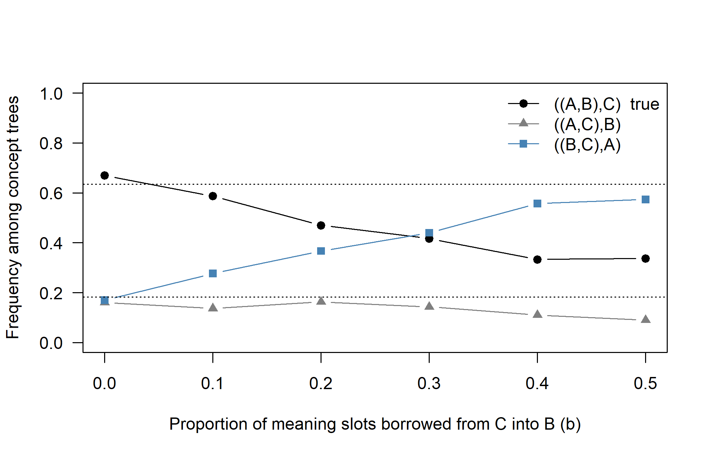
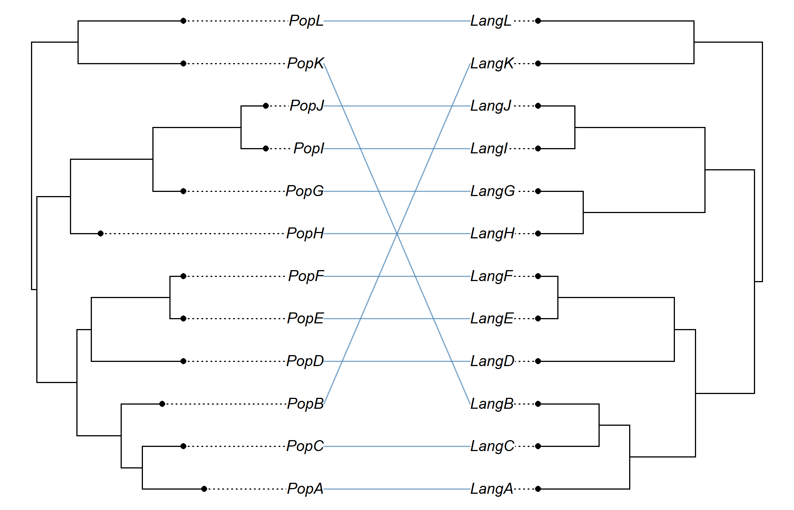
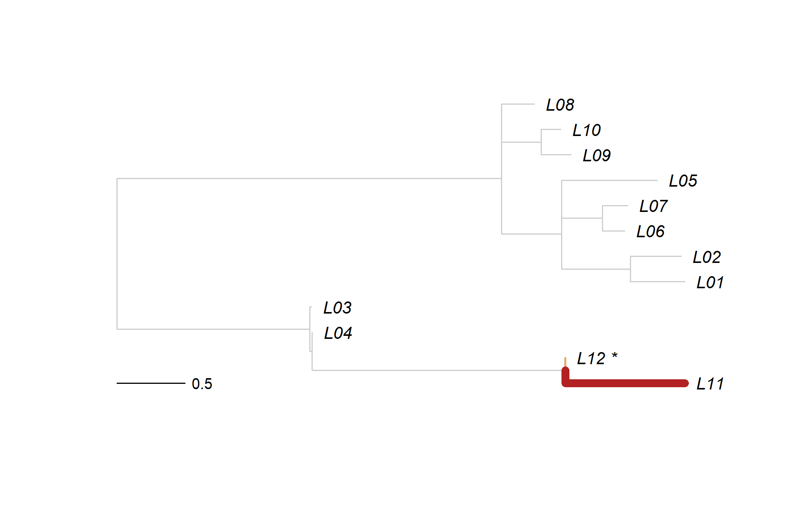

Chapter 16 The Biologist’s Toolbox: Methods Waiting for Linguistics
Almost every analysis in the preceding chapters rests on one simplification: a language family is a single tree, and each character changes along it independently, by a Markov process whose rules are the same everywhere. Each critique in Chapter 15 attacks one part of that simplification. Synonyms and ancestral variation mean that different meanings may have different histories. Borrowing means that some histories leave the tree. Rates differ among meanings and lineages for reasons the model does not represent. Structural features may evolve under rules that differ between families. And the tree itself is the outcome of a process of splitting and extinction that the tree prior describes only crudely. Evolutionary biology has met each of these problems in its own data and built models for them. This chapter asks which of those models can be carried over to languages, and on what conditions. The shared methodological problem is that a biological method is a stochastic model of how its data arise. Transferring it is justified only if a linguistic process satisfies the same assumptions, or if we can show that the violations do not matter for the question asked.
After reading this chapter you should be able to:
- state the four conditions (mapping, process, data, identifiability) under which a biological method can be transferred to language data, and apply them to a method not covered here;
- classify a proposed method as established in linguistics, a plausible extension or a speculative analogy, and justify the classification by naming the assumptions it preserves and violates;
- define a concept-level genealogy in an explicit model of lexical transmission, and explain when its marginal genealogy approximates the multispecies coalescent and when it does not;
- distinguish incomplete lineage sorting from borrowing using the symmetry of discordant patterns, and name the departures that would invalidate the test;
- explain why extinction rates and diversification shifts are weakly identifiable from trees of living languages, and how incomplete sampling biases diversification statistics;
- design a validation program for a proposed method that separates parameter recovery, robustness under misspecification, empirical adequacy and historical interpretation.
16.1 How to read this chapter
Transferring a method from biology to linguistics is never just a matter of feeding new data into old software: the model it embodies has to make sense for language. Four questions are worth asking of any candidate method.
- What is the mapping? Which linguistic entity plays the role of the gene, the individual, the population, the species and the fossil? The standard analogy (word or cognate set for gene, language for species, borrowing for horizontal gene transfer, ancient written language for fossil) is a starting point (Atkinson and Gray 2005), but each method requires a more specific mapping, and some mappings break down.
- Do the process assumptions hold? A coalescent model assumes that lineages within a population merge backward in time at a rate set by population size. A birth-death model assumes that lineages split and go extinct independently. Do speech communities and their words behave like that, at least approximately?
- Are the data available? Many biological methods need data that linguists rarely collect in usable form: multiple sampled individuals per population, aligned sequences, or dated extinct taxa with character data.
- Is the quantity of interest identifiable? Some biological methods estimate quantities, such as extinction rates from trees of living species, that are only weakly identifiable even with large biological datasets. Language trees are usually smaller. In the vocabulary of Section 6.10, a parameter can be identifiable under the model and still fail to be practically estimable with realistic linguistic samples, robust to misspecification, or interpretable as a historical quantity.
We classify each method into one of three tiers. Tier A (established in linguistics): the method, or a close linguistic variant, has been applied in several published studies, and its assumptions have been discussed for language data. Tier B (plausible extension): the mapping is direct and the core process assumptions are approximately satisfied, but the method has been applied rarely or not at all, and adaptation is needed. Tier C (speculative analogy): the mapping itself is uncertain, or the process assumptions are known to fail for language, so the method needs a new model of the linguistic process before it can be used, not just new data. The tier says nothing about how interesting a method is; some of the most interesting ideas are in tier C. Separately, we keep a status label that records use: applied (several linguistic applications known to us), barely (one or a few exploratory or partial applications) or not applied (none known to us). These labels, like the summary table, reflect our reading of the literature at the time of writing and should be revised as the field moves.
For each method we close with a short assessment: the tier, the assumptions that are preserved and violated, and a research program, that is, a proposal together with the evidence that would show it works. The evidence is described in the terms of Section 6.10: parameter recovery, robustness under misspecification (here, to the linguistic complications the model ignores), empirical adequacy and historical interpretation. Parameter recovery on data simulated under the method’s own model is necessary but easy; it shows only that the method can work, and a proposal that offers only this kind of evidence has not shown that the adaptation is effective.
Rather than list methods one after another, we organize them around five substantive questions about language history: how ancestral variation is sorted among descendants (Section 16.2); what determines rates of lexical and sound change (Section 16.3); how borrowing and language shift modify genealogies (Section 16.4); whether feature evolution follows shared or lineage-specific mechanisms (Section 16.5); and how languages diversify (Section 16.6). Table 16.2 at the end gathers the assessments.
Several of the methods in this chapter are also mentioned in the “From the biologist’s toolbox” boxes of earlier chapters, for example the structured coalescent in Chapter 11, hidden-rate models in Chapter 12 and profile mixture models in Chapter 7. This chapter collects them and goes into more depth on methods that do not fit naturally elsewhere.
16.2 Question 1: How is ancestral variation sorted?
A protolanguage was not a uniform code. It had synonyms, dialects and competing variants, and its daughters inherited this variation unevenly. A cognate shared by two languages may therefore be a shared retention of one of several ancestral variants, not a shared innovation, even when no borrowing occurred. Biology calls the corresponding phenomenon incomplete lineage sorting. This section asks whether the biological theory of sorting, the multispecies coalescent, can be given a linguistic foundation, and then turns to a related problem: how variation within and between languages should be partitioned when choosing the units of analysis.
16.2.1 The multispecies coalescent and incomplete lineage sorting
How it works. In biology, different genes in the same set of species often have different histories. The reason is that species are populations, and populations carry genetic variation. When an ancestral species splits into two daughters, both inherit a pool of gene copies, and which copy ends up fixed in which daughter is partly a matter of chance. Looking backward in time, the gene copies sampled from different species do not merge (coalesce) exactly at the species split; they merge somewhere deeper in the ancestral population. If the time between two successive species splits is short relative to the population size, the copies may fail to coalesce within that interval, and the gene tree may then have a topology different from the species tree. This phenomenon is called incomplete lineage sorting (ILS) (Maddison 1997; Pamilo and Nei 1988).
The multispecies coalescent (MSC) is the probability model that describes gene trees inside a species tree (Rannala and Yang 2003; Degnan and Rosenberg 2009). Within each branch of the species tree, lineages coalesce according to Kingman’s coalescent (Kingman 1982): when \(k\) lineages are present, the waiting time until the next coalescence (backward in time) is exponentially distributed with rate \[\begin{equation} \frac{k(k-1)}{2} \tag{16.1} \end{equation}\] when time is measured in coalescent units, that is, generations divided by twice the effective population size, \(t/(2N_e)\) for diploids (for the haploid models used below, \(t/N_e\)). Lineages that have not coalesced by the top of a branch pass into the ancestral branch, where they may coalesce with lineages coming from the sister branch.
The simplest consequence can be worked out by hand. Take three species with species tree \(((A,B),C)\), and let \(T\) be the length, in coalescent units, of the internal branch between the \((A,B)\) split and the root. The lineages from \(A\) and \(B\) coalesce within that branch with probability \(1 - e^{-T}\), in which case the gene tree is \(((A,B),C)\). With probability \(e^{-T}\) they fail to coalesce, and all three lineages enter the root population, where each of the three possible pairs is equally likely to coalesce first. The probability that the gene tree matches the species tree is therefore \[\begin{equation} P\big(((A,B),C)\big) = 1 - \tfrac{2}{3}\, e^{-T}, \tag{16.2} \end{equation}\] and each of the two discordant gene trees has probability \(\tfrac{1}{3} e^{-T}\). Two features of this result matter for what follows. First, the two discordant topologies are equally frequent under ILS alone. Second, for very short internal branches the matching topology is only slightly more frequent than either discordant one. For four or more species, there exist species trees, with several short internal branches, for which the most probable gene tree is not the species tree, a region of tree space called the anomaly zone (Degnan and Rosenberg 2006). In the anomaly zone, taking a majority vote over gene trees gives the wrong species tree.
Methods for inferring species trees under the MSC fall into two broad families. Full-likelihood or Bayesian methods, such as BPP, BEAST and StarBEAST2 (Heled and Drummond 2010; Ogilvie et al. 2017), co-estimate gene trees and the species tree from sequence data. Summary* methods, such as ASTRAL (Mirarab et al. 2014; Chao Zhang et al. 2018), take estimated gene trees as input and find the species tree that agrees with the largest number of gene-tree quartets, which is a statistically consistent estimator under the MSC. A third family bypasses gene trees altogether: SNAPP (Bryant et al. 2012) integrates over all possible gene trees analytically for unlinked biallelic markers, and SVDquartets (Chifman and Kubatko 2014) infers quartets from site-pattern frequencies. A crucial theoretical result is that simply concatenating all genes and analyzing them as if they shared a single tree can be statistically inconsistent under the MSC: with enough data, concatenation can converge on the wrong tree (Kubatko and Degnan 2007; Edwards 2009).
The linguistic mapping. The natural linguistic analogue of a gene is a meaning slot (a concept such as ‘fire’ or ‘water’), and the analogue of a gene copy is the word that fills that slot in a given speech community. The analogue of genetic polymorphism is lexical variation within a speech community: synonyms, competing variants, dialectal alternatives and register differences. Language change is in this sense a population process. Variants compete, and over time one of them may go to fixation while the others are lost. The parallel between lexical variants and alleles under drift has been developed formally by Reali and Griffiths (2010), and Newberry et al. (2017) used time-series methods from population genetics to distinguish selection from drift in the history of English grammatical variants.
Given this mapping, ILS has a clear linguistic meaning. If an ancestral language had two words for the same meaning, and its daughters each retained one of them, then which daughters share a word is determined partly by chance and need not reflect subgrouping. A classic example is the vocabulary for ‘fire’ in Indo-European. Proto-Indo-European is reconstructed with (at least) two words for fire: *h₁n̥gʷnis, continued in Latin ignis and Sanskrit agní-, and *péh₂ur, continued in Hittite paḫḫur, Greek pŷr and English fire. Latin and Sanskrit are not each other’s closest relatives, and neither are Greek and English. The distribution of the two roots reflects the sorting of ancestral variation, and anyone who coded it naively would find characters that conflict with the accepted tree. In the terms of the traditional comparative method, these characters are shared retentions, not shared innovations, and the MSC is a probabilistic model of exactly why shared retentions are poor evidence of subgrouping (Section 15.10).
The analogy also clarifies what standard linguistic phylogenies do. A binary cognate matrix analyzed under a single tree is a concatenated analysis in the MSC sense: all meaning slots are assumed to share one history. The theory just cited implies that if ILS is common and internal branches are short, as they often are in rapid expansions like those of Bantu or Austronesian, concatenation could in principle mislead. Whether lexical ILS is common enough to matter is an open empirical question. Several linguists have pointed out that sorting of ancestral variation can produce non-tree-like patterns that might otherwise be attributed to contact (see Jacques and List 2019 for a discussion within the comparative method). The distinction matters, because ILS and borrowing leave different statistical footprints (Section 16.4.1).
The existence of competing synonyms does not, however, establish that their histories follow Kingman’s coalescent. The coalescent is the limit of a particular population-genetic process, and whether words behave like genes in that process is a substantive question, not a matter of analogy. The next section therefore specifies a process.
16.2.2 A model of lexical transmission
Consider one speech community, idealized as \(N\) speakers, and one concept. Each speaker uses a word for the concept, and each word belongs to a cognate class. Time runs in generations of learners. In each generation every learner acquires the word for the concept from the previous generation in one of three ways:
- copying (probability \(1 - u - m\)): the learner adopts the word of a model speaker chosen from its own community, under a copying rule that may be neutral (every speaker equally likely to be copied) or biased;
- innovation (probability \(u\)): the learner uses a word that belongs to no existing class, by coinage or by semantic shift from another concept, so that a new cognate class is born;
- borrowing (probability \(m\)): the learner copies a model from a different, contemporaneous speech community.
A cognate class is lost when no speaker uses it any longer. A language split is a split of the community into two that no longer copy from each other, except through borrowing. With neutral copying this is the Wright-Fisher model of population genetics (Wright 1931) with infinitely many possible alleles, and the alleles are cognate classes; a version with overlapping generations is the Moran model (Moran 1950). Related models of variant competition in a speech community have been studied by Baxter et al. (2006), whose utterance selection model has correspondences with the Wright-Fisher model but also significant differences; by Reali and Griffiths (2010), who showed that iterated learning by Bayesian learners can be equivalent to drift with mutation; and, in cultural evolution more broadly, by Bentley et al. (2004).
Within this model a concept-level genealogy can be defined precisely. Every word token in the present generation was copied from a model token in the previous generation, which was copied from an earlier one, and so on. Following these copying links backward from a sample of tokens, one per sampled language (or several, if synonyms or several speakers are sampled), gives a tree: the genealogy of the concept. Innovation does not start a new genealogy. It is a mutation on an existing lineage that changes the class of the token without changing its ancestry, so cognate classes are the partition of the sampled tokens induced by innovation events on the genealogy: two tokens belong to the same class exactly when no innovation occurred on the path that connects them. Replacement of the dominant word in a language is the spread to fixation of one of these innovations. Borrowing is a copying link that crosses from one community to another, which in population genetics is migration. When several classes coexist in a language, sampling several tokens per language (several speakers, or the synonyms listed in a dictionary) corresponds to sampling several individuals per species, the setting for which the MSC was designed.
Three consequences follow. They are derived in Section E.2.2.
- When the coalescent holds. If copying is neutral and exchangeable, the community is well mixed, its size changes slowly and \(N\) is large, the genealogy of a sample of tokens from one community converges to Kingman’s coalescent with time measured in units of \(N\) generations. If, in addition, communities split cleanly and never borrow, the genealogy of one token per language follows the multispecies coalescent, and the cognate classes within each community follow Ewens’ sampling formula. With borrowing, the genealogy follows a coalescent with migration, not the MSC.
- What the data reveal. For a single concept the data are a partition of the languages into a handful of cognate classes, not a resolved tree. Per-concept “gene trees” cannot be estimated from cognate data, so summary methods that start from estimated gene trees, such as ASTRAL, have little to work with. Methods that integrate over genealogies, such as SNAPP-like likelihoods or site-pattern methods, are the natural route.
- What the replacement rate is. Under neutral copying an innovation fixes with probability \(1/N\), and about \(Nu\) innovations arise per generation, so the dominant class is replaced at rate \(u\) per generation, whatever the size of the community. This is the neutral-theory result of population genetics, and it is the process that the replacement models of Chapter 7 assume implicitly. Synonymy persists, and sorting matters, when \(\theta = 2Nu\) is not small and internal branches of the language tree are short in units of \(N\) generations.
The coalescent approximation fails, in different ways, when the copying rule is not neutral or the community is not well mixed. Table 16.1 summarizes the main departures.
| Departure | Linguistic example | Genealogy | Symmetry |
|---|---|---|---|
| Conformity (frequency-dependent copying) | learners follow the majority usage | close to Kingman, but rare classes are purged, so classes are not Ewens-distributed | preserved |
| Novelty bias (anti-conformity) | fashionable new words | balancing selection: deep genealogies, long-lived synonym pairs | preserved |
| Prestige (a few speakers copied by many) | an influential speaker, a written standard | multiple mergers (a \(\Lambda\)-coalescent); smaller effective size; concepts linked | preserved |
| Directional selection on variants | shorter or more frequent forms win | not Kingman; sweeps reduce variation | preserved if sisters are alike |
| Structure within a community | dialects, social networks | structured coalescent | can fail if ancestral dialects differ |
| Borrowing between sampled languages | loans from a neighbor | coalescent with migration | fails (the signature of contact) |
| Semantic shift and polysemy | ‘skin’ > ‘bark’; one word for ‘hand’ and ‘arm’ | lineages jump between concepts; concepts are not independent loci | preserved, but loci are linked |
| Founder effects at splits | a small group settles an island | a burst of coalescence at the split | preserved |
Three points in the table deserve emphasis. First, the symmetry on which the test for borrowing rests needs only that the two sister lineages are exchangeable, not that copying is neutral, so it survives most social biases; it fails under borrowing, which is what it is meant to detect, and under structure in the ancestral community, which is a genuine alternative explanation. Second, the amount of discordance does not survive the biases. Conformity, prestige and founder effects all speed up sorting, so a full MSC analysis would infer internal branches that are too long in coalescent units, or equivalently “population sizes” that are too small. The effective size of a speech community is identifiable under the model, but it is not interpretable as a number of speakers; at best it measures how fast variation is sorted. Third, directional selection matters empirically: Blythe and Croft (2012) argued that the S-shaped curves typical of documented changes arise only if some variants are favored over others, and Newberry et al. (2017) found selection in some English changes and drift in others. The neutral model is a null model, not a description.
16.2.3 Simulation: concept trees under the multispecies coalescent
We wrote a small MSC simulator, sim_msc_tree(). Given a language tree with branch lengths in coalescent units, it starts with one lineage per tip and, moving from the tips toward the root, lets lineages coalesce within each branch according to Equation (16.1). The output is one concept-level tree: the genealogy of the words filling one meaning slot, under the conditions of point 1 above. Section 16.4.1 uses it to generate concept trees with and without borrowing.
16.2.4 Simulation: does the token model produce a coalescent?
The MSC simulator assumes the coalescent. To ask whether the lexical transmission model produces one, we simulate the model forward in time. A community of 30 speakers evolves for 400 concepts at once, with innovation probability \(u = 0.01\) per learner and concept. After a burn-in that brings the variation to equilibrium, we tag every token with the speaker who used it at a reference time and then follow the tags forward. Two tokens sampled \(t\) generations later carry the same tag exactly when their genealogies coalesced within those \(t\) generations, the event that decides whether two sister languages that separated \(t\) generations after the reference time are sorted for that concept. Under the coalescent the probability is \(1 - e^{-t/N}\). We compare three copying rules: neutral copying; a conformist rule, under which a learner who meets two models that agree adopts their word half of the time; and a prestige rule, under which, in one generation in ten, half of the learners copy a single speaker for every concept. In the vocabulary of Section 6.10, the neutral run checks that the approximation holds where theory says it should, and the other two test the robustness of the coalescent description to misspecification.
The functions behind this simulation, the derivation of the coalescent limit of the token model, and a check of the neutral simulator against Ewens’ sampling formula are in Section E.2.2.
set.seed(1607)
rules <- c(neutral = "neutral", conformist = "conformist",
prestige = "prestige")
token_sims <- lapply(rules, run_bias)
Tg <- token_sims$neutral$curve[, "T"]
plot(Tg, 1 - exp(-Tg), type = "l", lty = 2, ylim = c(0, 1), las = 1,
xlab = "Generations since the reference time / N",
ylab = "P(two tokens share an ancestor)")
cols <- c(neutral = "black", conformist = "steelblue",
prestige = "firebrick")
for (r in names(rules))
lines(Tg, token_sims[[r]]$curve[, "coal"], col = cols[r], lwd = 2)
legend("bottomright", c("coalescent", names(rules)), bty = "n",
lty = c(2, 1, 1, 1), lwd = c(1, 2, 2, 2),
col = c("black", cols))![A forward model of lexical transmission compared with the coalescent. Each curve is the probability that two word tokens sampled from a community of 30 speakers descend from the same token t generations earlier, averaged over 400 concepts; the horizontal axis is t/N, in coalescent units. The dashed curve is the coalescent prediction. Neutral and conformist copying follow it closely; prestige copying (half of the learners copying one speaker in one generation in ten) produces jumps, the multiple mergers of a Lambda-coalescent, and much faster sorting.](16-biology-toolkit_files/figure-html/biology-toolkit-token-model-1.png)
Figure 16.1: A forward model of lexical transmission compared with the coalescent. Each curve is the probability that two word tokens sampled from a community of 30 speakers descend from the same token t generations earlier, averaged over 400 concepts; the horizontal axis is t/N, in coalescent units. The dashed curve is the coalescent prediction. Neutral and conformist copying follow it closely; prestige copying (half of the learners copying one speaker in one generation in ten) produces jumps, the multiple mergers of a Lambda-coalescent, and much faster sorting.
# cognate classes per concept among the 30 speakers, and Ewens' expectation
theta <- 2 * 30 * 0.01
round(c(sapply(token_sims, `[[`, "classes"),
ewens = sum(theta / (theta + 0:29))), 2)#> neutral conformist prestige ewens
#> 3.05 1.58 2.62 2.97Figure 16.1 separates two things that a coalescent analysis of cognate data assumes: a genealogy, and a process of innovation on it. Under neutral copying the genealogy follows the coalescent curve, and the number of cognate classes per concept among the 30 speakers agrees with Ewens’ formula (the last two printed values). Under the conformist rule the genealogy hardly changes, but the variation does. There are about half as many classes per concept, because conformity purges rare innovations before they can spread. Cognate data generated this way would look like data from a neutral model with a much lower innovation rate, although the genealogy is nearly Kingman. Under the prestige rule the genealogy itself departs from Kingman. Sorting happens in jumps, when one speaker is copied by half the community, and on average much faster than the number of speakers implies. Because the jumps happen in all concepts at once, the concepts are no longer independent loci, and any test that treats them as independent will overstate its confidence. Both biased rules still treat sister communities alike, which is why the symmetry test of Section 16.4.1 still applies to them. One run with 30 speakers is an illustration, not a study; the research program below asks for the systematic version.
Assessment: the multispecies coalescent. Tier B for site-pattern tests and for simulation studies of sorting; tier C for full-likelihood species-tree inference with interpretable population sizes. Barely applied. Preserved: concepts as loci, language splits as population splits, ancestral synonymy as polymorphism, and, under neutral and exchangeable copying, a concept genealogy that is a coalescent (Section 16.2.2). Violated: social biases change the amount of sorting and, under prestige, the shape of the genealogy; borrowing adds migration; semantic shift and polysemy link loci; and word lists usually record one “most basic” word per meaning, which is not a random sample of tokens, so within-language variation is censored by the way the data are collected. What would show it works: (i) parameter recovery of the language tree from cognate data simulated under the neutral token model; (ii) robustness of the same analysis to conformity, prestige, dialect structure and borrowing, extending the simulation above; (iii) empirical adequacy, with posterior predictive distributions of the number of classes per concept and of synonyms per language that match datasets which record synonyms; (iv) historical interpretation, checking inferred ancestral polymorphism against the synonymy that philology documents for written protolanguages such as Latin.
Research program. Three projects follow. First, a simulation study, with the token model rather than the coalescent alone, asking how much lexical sorting would be needed for concatenated cognate analyses of rapid radiations to enter something like the anomaly zone, and whether realistic social biases make that more or less likely. Second, a species-tree analysis in which each meaning slot is treated as a multistate locus and multiple varieties (dialects, or multiple sources for the same language) are treated as sampled “individuals” within a language “species”. This would allow within-language variation, which is usually discarded, to inform estimates of ancestral variation and to correct for sorting. StarBEAST-type models would need adaptation for cognate-class data, but SNAPP’s treatment of biallelic markers (Bryant et al. 2012) suggests a starting point for binary cognate data. Its inferred population sizes measure the rate of sorting, not numbers of speakers (Table 16.1). Third, the lexical \(D\) statistic of Section 16.4.1, which needs much weaker assumptions than either.
Biologists have learned to treat discordance among genes as signal rather than noise. Discordance tells us about ancestral population sizes, about the timing of splits relative to those sizes, and, when asymmetric, about gene flow. The linguistic analogue would treat disagreement among meaning slots as information about the amount of lexical variation in protolanguages, about how rapidly a family radiated, and about contact. Standard binary cognate analyses discard this information by forcing all slots onto one tree. Two practical tools from biology are especially easy to adapt: site concordance factors, which report, for each branch of a tree, the proportion of informative characters that support it, and the \(D\) statistic and its relatives for testing whether discordance is symmetric.
16.2.5 Species delimitation and the language-dialect problem
How it works. Species delimitation methods ask how many species are present in a sample and which individuals belong to which. Three families of methods are prominent. The generalized mixed Yule-coalescent (GMYC) model (Pons et al. 2006) fits a single-locus ultrametric tree with a model in which branching events deeper than a threshold time follow a Yule (speciation) process and branching events shallower than the threshold follow a coalescent (within-species) process. The threshold, estimated by maximum likelihood, separates between-species from within-species branching. The Poisson tree processes (PTP) model (Zhang et al. 2013) does the same with branch lengths measured in substitutions rather than time. Multilocus methods such as BPP (Yang and Rannala 2010) and Bayes factor delimitation (Leaché et al. 2014) compare MSC models in which different groupings of individuals are treated as species. An important caution comes from Sukumaran and Knowles (2017), who showed that MSC-based delimitation detects population structure, which need not coincide with species boundaries: any isolated population will be “delimited” given enough data.
The linguistic mapping. The language versus dialect problem (Section 15.8) is a delimitation problem. Its practical form is: given lexical or phonological data from many local varieties (for instance, from a dialect atlas), how many distinct “languages” should be recognized for the purposes of a phylogenetic analysis, and which varieties belong to each? The GMYC logic transfers in outline. Within a language, varieties differ by a slow accumulation of small changes and remain in contact, so their tree should look like a coalescent tree with many short, shallow branches; between languages, the tree should look like a branching process. Sukumaran and Knowles’s caution also transfers: any method that identifies discrete clusters in dialect data will find structure, and whether that structure corresponds to “languages” in a sociolinguistic sense (mutual intelligibility, a shared standard) is a separate question. Related work exists: Wichmann (2019) proposed using a threshold on lexical distances computed from ASJP word lists to distinguish languages and dialects, and dialectometry has a long tradition of clustering local varieties (Section 8.8).
Assessment: species delimitation. Tier C; not applied. Preserved: the idea that branching within and between units follows different processes. Violated: dialects of one language are in continuous contact, so variation within a language is structured by geography and borrowing rather than by the panmictic coalescence the model assumes (Table 16.1); there is no single-locus genealogy of varieties to fit; and the target, a “language”, is defined socially as much as genealogically. What would show it works: run on dialect atlases with independent judgments of language boundaries, the method reproduces those boundaries better than a simple distance threshold, and the result is robust to changes in the density of sampling.
Research program. Fit a GMYC-type model to dated trees of dialect varieties within a few well-documented language areas, such as dialect atlases for Germanic or Romance varieties, where independent judgments of language boundaries exist, and compare the inferred thresholds with those boundaries and with ISO 639-3 and Glottolog classifications. Then apply the calibrated approach to areas where language boundaries are disputed. A second proposal is methodological: use delimitation as a preprocessing step for family-level phylogenies, so that the choice of which varieties to include as tips becomes an explicit, reproducible decision rather than an ad hoc one.
16.3 Question 2: What determines rates of lexical and sound change?
Rates of lexical replacement differ by orders of magnitude among meanings, and frequency of use predicts much of the difference (Pagel et al. 2007); whether they also depend on the size of speech communities is disputed (Section 9.10). The token model of Section 16.2.2 shows why these questions are about process. If copying is neutral, a meaning is replaced at its innovation rate \(u\), independently of community size, so rate differences among meanings must come from differences in how often new words are coined, shifted in or borrowed. If copying is biased, for instance against rare variants or in favor of frequent forms, the replacement rate depends on the strength of the bias and, through the fixation probability, on community size. The methods in this section do not settle the question by themselves, but they supply the tests that any answer needs: whether the rate models we use fit at all, how ancient languages can inform rates directly, and how change in the forms of words, rather than in their presence or absence, can be modeled.
16.3.1 Model adequacy and posterior prediction
How it works. Model selection tells us which of several models fits best; model adequacy asks whether the best model is good enough to have produced the data (Brown 2014b; Brown and Thomson 2018). The main tool is posterior predictive simulation (Section 6.9; Bollback (2002)). Biologists have developed adequacy tests for substitution models, for clock models (asking whether the clock-constrained branch lengths are consistent with the branch lengths estimated without a clock; D. A. Duchêne et al. (2015)), for tree priors, and for comparative models.
The linguistic mapping. Chapter 15 gives a worked example with the cognate-set size spectrum (Section 15.12), and Chapter 7 another with homoplasy (Section 7.10). Other natural test statistics for language data include the number of cognate classes per meaning slot; the number of cognate sets shared by each pair of languages; the number of characters requiring more than one gain on the tree; the asymmetry statistics of Section 16.4.1, which would reveal unmodeled contact; the number of synonyms per language, which the token model predicts; and, for clocks, the distribution of root-to-tip amounts of change among languages sampled at the same time.
The first systematic application to the standard linguistic set-up is that of King (2026b), who combined simulation-based calibration of the BEAST 2 implementation with posterior predictive simulation of a covarion model fitted to Indo-European data, using eight statistics of language divergence and cognate distribution. The model fell short on several of them (Section 7.10). King (2026a) applied posterior simulation-based calibration, which starts from the posterior for a given dataset rather than from the prior, to tip-dated Indo-European analyses (Section 10.8).
Assessment: model adequacy. Tier B; first systematic applications (King 2026b). Preserved: everything. Posterior predictive checks assume only that the model can be simulated, which every model in this book can. At risk: the choice of test statistic. A statistic that the model fits by construction (for example, the number of cognates per language under a model with branch-specific rates) has no power, and a battery of many statistics needs a correction for multiple testing. What would show it works: each statistic detects a known misspecification in simulated data (borrowing, rate shifts, Dollo violations) with useful power while not rejecting correctly specified models more often than its nominal rate; applied to published datasets, it identifies failures that change a substantive conclusion when the model is improved.
Research program. Develop a standard battery of posterior predictive tests for cognate data, implement it as a post-processing tool that reads BEAST 2 or RevBayes output and a CLDF dataset, and apply it to the main published datasets (Indo-European, Austronesian, Bantu, Sino-Tibetan, Pama-Nyungan) under the models used in their published analyses. The result would be a map of which aspects of lexical evolution current models capture and which they miss. A clock adequacy test of the type developed by D. A. Duchêne et al. (2015) would be particularly valuable for the debated dating results of Chapter 10.
16.3.2 Total evidence and tip-dating with the fossilized birth-death process
How it works. In biology, fossils were long used only to calibrate nodes, setting a minimum age for the clade they are assigned to. This discards the fossils’ own character data and requires the analyst to translate a fossil into a calibration density, which is notoriously difficult. Total-evidence dating instead includes fossils as tips with their own morphological characters, analyzed jointly with molecular and morphological data from living species (Pyron 2011; Ronquist, Klopfstein, et al. 2012), under the fossilized birth-death (FBD) tree prior described in Section 10.6.2 (Stadler 2010; Heath et al. 2014): splitting rate \(\lambda\), extinction rate \(\mu\), fossil sampling rate \(\psi\), extant sampling probability \(\rho\), and fossils that may be sampled ancestors, lying directly on a branch rather than at the end of their own side branch (Gavryushkina et al. 2014). It is implemented in MrBayes, BEAST 2 and RevBayes (Zhang et al. 2016).
The linguistic mapping. The mapping is unusually direct. Ancient written languages are fossils: they are sampled at a known time in the past and carry character data (cognates, structural features, sound changes). Many of them are close to direct ancestors of later languages, which is exactly the situation sampled-ancestor models were built for (Section 10.6). For the question of rates, dated ancient tips are the most direct evidence there is: the amount of change between an ancient language and its descendants, over a known interval, is a measured rate. Total evidence corresponds to combining lexical cognate data with structural (typological) and phonological characters, each in its own partition with its own model and possibly its own clock.
Ancient languages have long been included as dated tips in Bayesian analyses (for instance in Bouckaert et al. (2012)), and Chang et al. (2015) showed why their position as possible ancestors matters (Section 15.9). Heggarty et al. (2023) used a sampled-ancestor model for Indo-European. Analyses combining lexical and structural characters in a single partitioned Bayesian model remain uncommon (an analysis of Japonic that adds phonotactic characters as a separate partition to cognate data is a recent example of combining data types; Huisman et al. (2025)), although character-based analyses combining lexical, phonological and morphological characters have a long history (Ringe et al. 2002), and structural characters have been used on their own (Dunn et al. 2005, 2008).
Assessment: tip-dating and sampled ancestors. Tier A for ancient languages as dated tips and sampled ancestors (applied); tier B for full total-evidence analyses with several partitions (barely applied). Preserved: dated tips with character data, the possibility of ancestry, and a process of sampling through time. Violated: “fossilization” of languages depends on writing, so the sampling rate \(\psi\) is zero for most of prehistory and clustered in a few literate regions; written registers (Classical Latin, Vedic Sanskrit) are not samples of the spoken ancestral variety; and the FBD assumption that extinction and sampling are independent of the characters does not hold when the languages that were written down are those of states and empires. What would show it works: recovery of known ancestor-descendant relations and documented dates when one ancient language at a time is withheld and predicted (cross-validation, an empirical check), and robustness of the root age when the sampling rate is allowed to vary through time.
Research program. A full total-evidence analysis of a family with a rich written record: lexical cognates, structural features (for instance from Grambank) and regular sound changes, each as a separate partition, analyzed under an FBD prior in which the fossil sampling rate \(\psi\) is allowed to change through time. A skyline FBD with \(\psi = 0\) before the invention of writing in the relevant region, and a positive, possibly increasing, rate afterward, would represent the fact that languages can only be “fossilized” in texts. Fragmentarily attested ancient languages (Gaulish, Phrygian, Thracian, many Anatolian and Italic languages) could be included with mostly missing data, as poorly preserved fossils are in biology, and their placement would be estimated rather than imposed. The rates estimated from the ancient tips could then be compared across partitions, a direct test of whether grammar and vocabulary change at different rates (Section 9.9).
16.3.3 Sequence-level models of sound change
How it works. In molecular evolution, the unit of change is the site, and models such as GTR describe substitution rates between nucleotides. For sound change the natural unit is the sound correspondence or the sound law: a context-sensitive rewrite rule (for instance, Latin ct > Italian tt) that applies across the lexicon. Biology offers two partial models of such coordinated change. One is concerted evolution, in which members of a gene family evolve together because of gene conversion, so that changes spread across copies. The other is the modeling of correlated sites, as in models of RNA stems in which paired positions change together.
The linguistic mapping. Bouchard-Côté et al. (2013), building on earlier probabilistic approaches to diachronic phonology (Bouchard-Côté et al. 2007), developed a probabilistic model of sound change in which each branch of a language tree carries a set of context-dependent sound changes, parameterized by phonological features, and used it to reconstruct Proto-Austronesian word forms automatically from hundreds of modern languages; a large majority of the automated reconstructions were very close to those made by expert historical linguists (case study below and Section 12.12). Hruschka et al. (2015) modeled regular sound change in Turkic as “concerted evolution”: they treated each sound change as a correlated event affecting many words at once and identified the changes from the data (Section 12.11).
The Austronesian reconstruction of Bouchard-Côté et al. (2013) is a good illustration of what sequence-level models can do. The input was word forms (not cognate judgments) from the Austronesian Basic Vocabulary Database for several hundred languages, together with a fixed tree. The branch-specific distributions over context-sensitive edits to each sound had parameters shared across the lexicon, so that the same change applied regularly, and inference alternated between sampling ancestral word forms and re-estimating the sound-change parameters. Beyond reconstructing proto-forms, the authors used the model to test a long-standing hypothesis about sound change: that phonemic contrasts carrying a high “functional load” (distinguishing many words) are less likely to be lost through merger. They found support for it. The work shows that a probabilistic treatment of sound change can combine the regularity principle of the comparative method with the uncertainty quantification of phylogenetics.
Assessment: sequence-level sound-change models. Tier B; barely applied, but with strong results. Preserved: change along branches of a tree, inheritance of forms, uncertainty about ancestral states. Violated, deliberately: the independence of sites, which regular sound change contradicts; the models replace it with lexicon-wide parameters, which is their strength. At risk: analogy, borrowing and irregular change, which break regularity; and the fixed tree, which hides the dependence of reconstructions on the topology. What would show it works: reconstruction accuracy against expert proto-forms that were withheld from model development, and, for tree inference, recovery of documented subgroups from forms alone in families whose subgrouping rests on sound laws rather than on the same cognate sets used for the comparison.
Research program. The obvious next step is to estimate the tree jointly with the sound changes, rather than conditioning on a fixed tree, and to compare the support for contested subgroups provided by regular sound changes (which the comparative method treats as the strongest evidence of subgrouping) with that provided by lexical cognates. A Bayesian model in which shared sound changes are characters with a strong prior against parallel occurrence, and lexical cognates are characters with weaker priors, would formalize the traditional hierarchy of evidence.
16.3.4 Joint alignment and phylogeny of word forms
How it works. Molecular phylogenetics usually proceeds in two steps: align the sequences, then infer the tree from the alignment, treating the alignment as known. But the alignment is itself an inference, and errors in it propagate to the tree. Statistical alignment treats insertions and deletions as part of an explicit evolutionary model, beginning with the TKF91 model of Thorne et al. (1991), in which single-residue insertions and deletions occur as a birth-death process along each branch. BAli-Phy (Redelings and Suchard 2005; Suchard and Redelings 2006; Redelings 2021) uses MCMC to sample alignments, trees and model parameters jointly, so that the posterior distribution of trees integrates over alignment uncertainty. Later models relax the assumption, shared by TKF91, that insertions and deletions occur at the same rate everywhere; Zhai and Bouchard-Côté (2017), for instance, model variation in indel rates within the Poisson indel process.
The linguistic mapping. Word forms are short sequences of sounds, and cognate words can be aligned segment by segment. Latin octo, Italian otto, Spanish ocho and French huit (‘eight’) can be aligned so that corresponding sounds (Latin ct, Italian tt, Spanish ch, French it) fall in the same column, and insertions or deletions (such as the loss of final vowels in French) appear as gaps. Phonetic alignment algorithms such as those in LingPy (List 2012b) produce such alignments by progressive methods analogous to ClustalW. A joint model would sample alignments and trees together, which matters most for families with extensive sound change, where alignment is genuinely uncertain. The analogy is imperfect in an important way. Because sound change is largely regular, the “sites” of different words are not independent, and a model in which each word evolves independently by substitutions and indels ignores the most informative feature of linguistic data. Statistical alignment for language therefore needs to be coupled with models of regular sound change. Wheeler and Whiteley (2015) treated Uto-Aztecan word forms as sequences and used direct optimization, a parsimony-based method in which alignment and tree are inferred together, to infer the phylogeny and biogeography of the family; probabilistic joint alignment in the BAli-Phy sense has, to our knowledge, rarely if ever been applied to word forms. Two recent studies come close from different sides. Goldstein et al. (2026) adapted the TKF91 model itself to aligned cognate word forms, so that the tree is inferred from segmental strings rather than from cognate codes, although the alignments are fixed in advance. And Jäger (2025) derived phylogenetic characters from multiple sequence alignments of word forms produced with a pair-hidden Markov model, without expert cognate judgments; these characters were competitive with expert cognates within families and outperformed both expert and automatically detected cognates on datasets spanning many families.
Assessment: joint alignment and phylogeny. Tier B; barely applied. Preserved: sequences related by descent with substitutions and indels; uncertainty in homology. Violated: independence among words (regular correspondences), a substitution process over an alphabet of sounds that is the same everywhere in the tree, and the assumption that every compared form is homologous, which cognate judgment must first establish. What would show it works: posterior alignments that match expert alignments in a well-studied family, and trees from forms that agree with trees from cognate data on the parts where both are well supported, without the agreement being forced by sharing the same cognate sets.
Research program. Encode words as sequences of sound classes (as in LingPy’s SCA classes) and run BAli-Phy on cognate sets from a well-studied family with a custom substitution matrix over sound classes, with a shared tree across cognate sets. Compare the posterior alignments with expert alignments and the posterior trees with trees from cognate-coded data. The main aim is not to replace cognate-based phylogenies but to quantify how much phylogenetic information resides in the form of cognates beyond their presence or absence.
16.4 Question 3: How do borrowing and language shift modify genealogies?
Chapter 8 treats borrowing as a problem for tree inference and surveys the models linguists have built for it. Biology suggests a change of perspective. In the token model, a loan is a copying link that crosses from one speech community to another, so borrowing changes the genealogy of a concept, not the language tree. Language shift, in which a population adopts another language, changes the relation between the genealogy of languages and the genealogy of their speakers. The methods below differ in the unit whose genealogy they follow: a concept (the \(D\) statistic and network coalescent models), a family of related words (reconciliation), a language’s whole profile of features (clustering), or the pairing of populations with languages (cophylogeny).
16.4.1 Borrowing versus sorting: distinguishing the footprints
Discordant concept trees can arise from sorting, from borrowing, or from both. Biology faces exactly the same problem with ILS and hybridization or introgression, and the solution exploits the symmetry noted after Equation (16.2): under ILS alone the two discordant topologies of any rooted triplet are equally frequent, whereas borrowing (or introgression) from one particular lineage into another makes one of them more frequent than the other. This is the logic of the ABBA-BABA or \(D\) statistic used to detect Neanderthal admixture in modern humans (Green et al. 2010; Durand et al. 2011; Patterson et al. 2012).
To see this in a linguistic setting, we take a five-language tree \(((A,B),(C,(D,E)))\) and let a proportion \(b\) of meaning slots undergo borrowing: the word of language \(B\) is replaced by a loan from language \(C\) at a recent time. In the concept tree, this is represented by pruning \(B\) and regrafting it onto the lineage of \(C\) at the time of contact. We then count, for the triplet \(\{A, B, C\}\), how often each of its three rooted topologies appears. Because the concept trees are generated by the coalescent, this simulation shows what the test can detect when the coalescent holds (parameter recovery, in the vocabulary of Section 6.10); Table 16.1 and the token simulation above indicate which departures would leave its symmetry intact.
lang5 <- read.tree(text = "((A:1.5,B:1.5):0.6,(C:1.2,(D:0.6,E:0.6):0.6):0.9);")
borrow_word <- function(g, recipient = "B", donor = "C", t_contact = 0.3) {
g2 <- drop.tip(g, recipient)
bind.tip(g2, recipient, where = which(g2$tip.label == donor),
position = t_contact, edge.length = t_contact)
}
triplet_topology <- function(g) {
tr <- keep.tip(g, c("A", "B", "C"))
if (is.monophyletic(tr, c("A", "B"))) "AB"
else if (is.monophyletic(tr, c("B", "C"))) "BC" else "AC"
}
b_grid <- c(0, 0.1, 0.2, 0.3, 0.4, 0.5)
n_concepts <- 300
trip <- t(sapply(b_grid, function(b) {
topo <- replicate(n_concepts, {
g <- sim_msc_tree(lang5)
if (runif(1) < b) g <- borrow_word(g)
triplet_topology(g)
})
table(factor(topo, levels = c("AB", "AC", "BC"))) / n_concepts
}))
T_ABC <- 0.6 # internal branch of the triplet in coalescent units
matplot(b_grid, trip, type = "b", pch = c(19, 17, 15), lty = 1,
col = c("black", "grey50", "steelblue"), ylim = c(0, 1), las = 1,
xlab = "Proportion of meaning slots borrowed from C into B (b)",
ylab = "Frequency among concept trees")
abline(h = c(1 - 2/3 * exp(-T_ABC), 1/3 * exp(-T_ABC)), lty = 3)
legend("topright", c("((A,B),C) true", "((A,C),B)", "((B,C),A)"),
pch = c(19, 17, 15), col = c("black", "grey50", "steelblue"),
lty = 1, bty = "n")
Figure 16.2: Frequencies of the three rooted topologies for the triplet {A, B, C} among 300 simulated concept trees, as a function of the proportion b of meaning slots in which B borrowed its word from C. With b = 0 the two discordant topologies, (A,C) and (B,C), are equally frequent, as expected under incomplete lineage sorting alone; borrowing breaks the symmetry. Dotted lines show the analytical expectations under sorting alone.
#> b AB AC BC
#> [1,] 0.0 0.670 0.160 0.170
#> [2,] 0.1 0.587 0.137 0.277
#> [3,] 0.2 0.470 0.163 0.367
#> [4,] 0.3 0.417 0.143 0.440
#> [5,] 0.4 0.333 0.110 0.557
#> [6,] 0.5 0.337 0.090 0.573Figure 16.2 shows that without borrowing, about a third of concept trees are discordant for this triplet, and the two discordant topologies are about equally common, as Equation (16.2) predicts. As borrowing increases, the \((B,C)\) topology becomes more frequent than \((A,C)\), and by \(b \approx 0.4\) it overtakes the true topology. The asymmetry between the two minor topologies, not the overall amount of discordance, is the signature of contact.
Concept trees are not observed, but the same logic applies to cognate patterns. For four languages with an established tree \((((P_1,P_2),P_3),O)\), call a meaning an ABBA pattern if \(P_2\) and \(P_3\) share a cognate class that \(P_1\) and the outgroup \(O\) do not have, with \(P_1\) and \(O\) sharing a different class, and a BABA pattern if the roles of \(P_1\) and \(P_2\) are reversed. The lexical \(D\) statistic is \[\begin{equation} D = \frac{n_{\text{ABBA}} - n_{\text{BABA}}}{n_{\text{ABBA}} + n_{\text{BABA}}}, \tag{16.3} \end{equation}\] which has expectation zero under sorting alone and is positive if \(P_3\) lent words to \(P_2\) (or borrowed from it). Its standard error should be estimated by a block jackknife over meanings, or over semantic fields if meanings are linked by polysemy or by prestige effects of the kind shown in Figure 16.1. The derivation of the null expectation, which needs only that \(P_1\) and \(P_2\) evolve under the same process after their split, is in Section E.2.3.
Assessment: the lexical \(D\) statistic. Tier B; not applied. Preserved: the symmetry of discordant patterns under sorting, which requires exchangeability of the sister languages but not neutral copying or Kingman genealogies (Table 16.1). Violated or at risk: structure in the ancestral speech community (if the ancestors of \(P_2\) and \(P_3\) were neighboring dialects, \(D \neq 0\) without later borrowing, as ancestral structure can mimic admixture in genetics); unequal sampling or coding of \(P_1\) and \(P_2\) (a better-documented language has more synonyms recorded and so more chances to share); parallel semantic shift; and an uncertain reference tree. What would show it works: power and false-positive rates under the token model with conformity, prestige and ancestral structure; and, empirically, detection of documented contact (Norse and English, French and English, Tongan and East Uvean) together with non-detection in quartets where no contact is known.
Research program. Compute lexical \(D\) statistics from existing CLDF datasets for quartets in which contact is documented, and for control quartets where it is not, with a block jackknife over meanings for standard errors. The comparison gives an empirical false-positive rate. Then simulate cognate data under the token model with ancestral dialect structure to find out how large a \(D\) value ancestral structure alone can produce, which sets a threshold for interpreting real values.
16.4.2 Explicit phylogenetic networks
How it works. Split networks such as NeighborNet (Bryant and Moulton 2004) display conflicting signal without representing an explicit history of reticulation events (Huson and Bryant 2006); explicit phylogenetic networks contain reticulation nodes with two parents, representing hybridization or introgression (Section 8.11). PhyloNet (Than et al. 2008; Wen et al. 2018) infers networks under a multispecies network coalescent, which combines ILS with reticulation. SNaQ (Solı́s-Lemus and Ané 2016) estimates networks from gene-tree quartet concordance factors by pseudolikelihood, scaling to many genes. SpeciesNetwork (Chi Zhang et al. 2018) performs full Bayesian inference of species networks in BEAST 2. The \(D\) statistic and \(f\)-statistics (Durand et al. 2011; Patterson et al. 2012) test specific admixture hypotheses from site-pattern counts.
The linguistic mapping. Chapter 8 discusses split networks, minimal lateral networks, models of lateral transfer (Kelly and Nicholls 2017), contact-aware tree models (Neureiter et al. 2022) and perfect phylogenetic networks (Nakhleh, Ringe, et al. 2005), all applied to language data. What biology adds is the integration of reticulation with sorting: a network coalescent model would distinguish discordance caused by sorting of ancestral variation from discordance caused by contact, as in the simulation above. It would also allow a reticulation node to carry an inheritance probability, the proportion of the lexicon contributed by each parent, which is a natural parameter for mixed languages and for heavily restructured contact languages. Once such a network is available, comparative methods can be run on it: Bastide et al. (2018) extended Brownian-motion models of continuous trait evolution, and the phylogenetic covariance they imply, from trees to networks with reticulations, so that a trait inherited partly from each parent of a contact event can be modeled directly.
Assessment: network coalescent models. Tier A for split networks and linguistically motivated network models (applied); tier B for network-coalescent methods such as PhyloNet, SNaQ and SpeciesNetwork (barely or not applied). Preserved: lineages that split and occasionally merge; a coalescent within lineages. Violated: borrowing in language is usually piecemeal and continuous over centuries rather than a single hybridization event, so a reticulation node with one inheritance probability is a coarse summary; the coalescent assumptions of Section 16.2.2; and the quartet concordance factors SNaQ uses are estimated from gene trees that cognate data do not resolve (point 2 in that section). What would show it works: recovery of documented contact episodes as reticulations, with inheritance probabilities close to the proportion of loans counted in etymological dictionaries, and no reticulations in subgroups without known contact.
Research program. Fit SNaQ to quartet concordance factors computed directly from cognate data for a family with known episodes of intense contact, such as the Germanic languages in contact with Norse and French, or a Sinitic dataset, and ask whether the method recovers the documented contact episodes as reticulations with plausible inheritance probabilities. In parallel, compute lexical \(D\) statistics for the same quartets as a simpler test.
16.4.3 Reconciliation: duplication, transfer and loss
How it works. Gene families evolve within species by four kinds of events: speciation (the gene copy splits when the species does), duplication (a new copy arises within a genome), horizontal transfer (a copy jumps from one lineage to another) and loss. Reconciliation methods take a gene tree and a species tree and find the mapping of gene-tree nodes onto species-tree branches that explains their differences with the fewest or most probable events. Parsimony-based reconciliation assigns costs to duplications, transfers and losses (DTL) and finds the minimum-cost scenario, efficiently for most cost schemes (Tofigh et al. 2011; Bansal et al. 2012). Probabilistic methods such as ALE (Szöllősi, Rosikiewicz, et al. 2013; Szöllősi, Tannier, et al. 2013) model DTL as a birth-death-like process along the species tree and integrate over uncertainty in the gene tree by using a sample of gene trees, estimating per-family rates of duplication, transfer and loss. A distinctive feature of transfer inference is that it can use timing constraints: a transfer can only occur between lineages that coexisted, so the species tree must be dated or at least partially ordered, and transfers to and from extinct or unsampled lineages must be modeled (Szöllősi, Tannier, et al. 2013).
The linguistic mapping. The parallel between borrowing and horizontal gene transfer is part of the standard analogy (List, Nelson-Sathi, Geisler, et al. 2014). Reconciliation sharpens it. Consider an etymological family: all the words descended from one Proto-Indo-European root across the family, possibly with different meanings and derivational forms. Its history is a “gene tree” of word forms. Speciation events correspond to language splits, losses to the disappearance of the word, duplications to the creation of a second word from the same root within one language (for instance, by derivation or by the coexistence of an inherited form and a learned form), and transfers to borrowing. English provides a clean example: shirt is the inherited Old English reflex of a Germanic word, while skirt is a loan from Old Norse of the cognate Norse word. In gene-family terms, English contains a native copy (an ortholog of German Schürze, ‘apron’, in a broad sense) and a transferred copy (a xenolog). Reconciliation of the root-level tree with the language tree would identify the Norse-to-English transfer and date it to the period when the two lineages were in contact.
Related linguistic work exists. Minimal lateral networks (Nelson-Sathi et al. 2011), which infer borrowing from the smallest number of lateral links that explains patchy cognate distributions on a tree (case study below), are close in spirit to parsimony DTL reconciliation for presence/absence data. Partial cognacy and the study of word families (List 2016) provide the gene-family-like structures that reconciliation needs. Information-theoretic methods for inferring directional lexical flow have also been developed (Dellert 2019).
Nelson-Sathi et al. (2011) analyzed the Indo-European data of Dyen et al. (1992) with a method developed for detecting lateral gene transfer in prokaryote genomes (described in Section 8.6). For each cognate set, they asked how many separate origins on a reference tree would be needed to explain its distribution without borrowing, and then sought the minimal network of lateral links that would make the observed distributions consistent with realistic numbers of origins. The analysis suggested that a non-trivial fraction of cognate sets in a curated basic-vocabulary list may involve undetected borrowing. Like any parsimony-based method it depends on the reference tree and on the assumption that patchy distributions call for lateral links rather than multiple losses, and its estimates should be read in that light. It remains one of the clearest examples of a biological method designed for horizontal transfer being carried over to language data with little modification.
Assessment: DTL reconciliation. Tier B; not applied in the formal sense. Preserved: a word family evolving inside a language tree by inheritance, loss and transfer, with transfers constrained to contemporaneous lineages. Violated: “duplication” in language (derivation, doublets, learned borrowings from an ancestral literary language such as Latin into French) is a mixture of processes with different dynamics; word-family trees must be estimated from short forms with regular sound change, so they are much less certain than gene trees; and semantic change moves words between meaning slots, which reconciliation does not model. What would show it works: precision and recall of inferred transfers against loans documented in etymological dictionaries, in a family whose borrowing history is well known.
Research program. Build etymological “gene trees” for a few hundred well-studied roots in a family with good etymological dictionaries (Germanic, Romance, Indo-Iranian or Turkic), using aligned reflexes and a simple sequence or character model to obtain samples of word trees. Reconcile them with a dated language tree using a probabilistic DTL method. The test of the approach is validation: compare the inferred transfers with loans documented in etymological dictionaries, estimating precision and recall. If performance is good, apply the method to families where borrowing histories are poorly documented. A conceptual payoff would be a principled distinction between inherited, derived (duplicated) and borrowed members of word families.
16.4.4 Population-genetic clustering: STRUCTURE and its relatives
How it works. STRUCTURE (Pritchard et al. 2000) and ADMIXTURE (Alexander et al. 2009) model each individual’s genotype as drawn from a mixture of \(K\) ancestral populations, each with its own allele frequencies, and estimate both the population allele frequencies and each individual’s mixture proportions. They do not assume a tree: they ask how variation is partitioned among clusters and which individuals are admixed.
The linguistic mapping. Treat each language as an individual and each linguistic feature (a typological feature or a cognate class) as a locus with alleles. STRUCTURE then partitions the languages into \(K\) clusters of feature profiles and estimates how much of each language’s profile derives from each cluster. Unlike a tree, this can represent languages whose features are drawn from more than one source, the signature of contact or of shared areal influence.
Reesink et al. (2009) applied STRUCTURE to structural (typological) features of a large sample of languages of Sahul, the Pleistocene continent comprising Australia and New Guinea, together with neighboring Island Melanesia. Because the deep relationships among the many language families of this region cannot be established by the comparative method, they asked instead whether the distribution of structural features could be explained by a small number of ancestral “populations” of features. The analysis identified clusters that partly matched known families and partly cut across them, with admixture-like profiles suggesting areal diffusion of features. The study is the clearest example of a population-genetic clustering method transferred to language data with an explicit argument about why a tree model would be inappropriate for the question. Similar clustering approaches have since been used on lexical data in other settings, including Tasmanian (Bowern 2012) and Finnish dialects (Syrjänen et al. 2016). Cathcart (2020) applied the same mixed-membership logic to sound change in Indo-Aryan, a family often described as a set of overlapping dialect zones rather than a tree. Sound changes between Old Indo-Aryan and the modern languages were extracted automatically from a large etymological dataset, and each language was modeled as a mixture of dialect components with their own distributions over sound-change outcomes. The analysis found evidence for cohesive dialect groups, and under one of the two priors compared (a logistic-normal prior that lets similar sound changes share information) the components were distributed largely in the core–periphery pattern of the old Inner–Outer hypothesis. The result depends on the prior, and the etymologies themselves are products of the comparative method, so agreement with a hypothesis framed in the same tradition is not independent confirmation of it.
Assessment: STRUCTURE-type clustering. Tier A; applied in a small number of studies. Preserved: mixture of sources in a profile, without a tree. Violated: the genetic model assumes Hardy-Weinberg and linkage equilibrium within clusters, which have no linguistic meaning, and typological features are strongly correlated with each other, so the clusters must be read as a descriptive decomposition, not as ancestral populations. What would show it works: clusters that are stable across \(K\) and across feature subsets, and that recover documented linguistic areas and known mixed languages better than ordinary clustering of the same data.
Research program. Use spatially explicit clustering methods, which add a geographic prior to the cluster memberships, on Grambank data for regions of intense contact (mainland Southeast Asia, the Caucasus, Amazonia), and compare the inferred clusters with linguistic areas proposed in the literature. Combine the results with phylogenetic controls so that clusters reflecting shared descent are distinguished from clusters reflecting contact.
16.4.5 Cophylogeny of languages and genes
How it works. Hosts and their parasites, or plants and their pollinators, often have phylogenies that partly mirror each other. Cophylogenetic methods ask how closely two trees correspond and what events explain the mismatches. Event-based methods, starting with TreeMap (Page 1994) and continuing with Jane (Conow et al. 2010), reconcile a “parasite” tree with a “host” tree by mapping it with four kinds of events: cospeciation, duplication (the parasite splits within one host), host switching, and loss, each with a cost. Global-fit methods ask whether the two trees are more congruent than expected by chance: ParaFit (Legendre et al. 2002) tests the association between the patristic distance matrices of the two trees given the links between their tips, and PACo (Balbuena et al. 2013) does so by Procrustes superimposition of their principal coordinates.
The linguistic mapping. The comparison of language trees with population genetic trees has a long history (Cavalli-Sforza et al. 1988). In cophylogenetic terms, the population tree is the host and the language tree is the parasite. Cospeciation corresponds to a population and its language splitting together; host switching corresponds to language shift, in which a population adopts the language of another; duplication corresponds to a language split without a corresponding genetic split; and loss corresponds to the disappearance of a lineage’s language without trace. Studies comparing genetic and linguistic relationships, such as that of Hunley et al. (2008) for Northern Island Melanesia and the global analysis of Barbieri et al. (2022), have documented both concordance and frequent mismatches.
We simulate a language tree for 12 populations, derive a genetic tree that mostly follows it but differs by two random local rearrangements, and then introduce two language shifts: populations PopB and PopK each adopt the other’s language. ParaFit tests the global congruence of the two trees, and its per-link statistics can flag the associations that contribute least to it. Because the shifts are built into the simulation, this is a parameter-recovery exercise for the test, not evidence that it works on real populations.
set.seed(1605)
lang_tree <- pbtree(n = 12, scale = 1,
tip.label = paste0("Lang", LETTERS[1:12]))
gene_tree <- lang_tree
gene_tree$tip.label <- sub("Lang", "Pop", gene_tree$tip.label)
gene_tree <- rNNI(gene_tree, moves = 2) # genetic noise and admixture
links <- cbind(gene_tree$tip.label, sub("Pop", "Lang", gene_tree$tip.label))
links[links[, 1] == "PopB", 2] <- "LangK" # language shifts
links[links[, 1] == "PopK", 2] <- "LangB"
A <- unclass(table(factor(links[, 1], levels = gene_tree$tip.label),
factor(links[, 2], levels = lang_tree$tip.label)))
pf <- parafit(cophenetic(gene_tree), cophenetic(lang_tree), A, nperm = 199,
test.links = TRUE, correction = "cailliez", silent = TRUE)
invisible(capture.output(
cp <- cophylo(gene_tree, lang_tree, assoc = links, rotate = TRUE)))
plot(cp, link.lty = "solid", link.col = adjustcolor("steelblue", 0.7),
fsize = 0.8)
Figure 16.3: Cophylogeny of a simulated population (genetic) tree, left, and a language tree, right. Lines link each population to the language it speaks. Two populations, PopB and PopK, have shifted language, producing crossing links.
link_tab <- data.frame(population = rownames(A)[pf$link.table[, "Host"]],
language = colnames(A)[pf$link.table[, "Parasite"]],
F1 = round(pf$link.table[, "F1.stat"], 2),
p = pf$link.table[, "p.F1"])
list(global_p = pf$p.global,
weakest_links = head(link_tab[order(link_tab$F1), ], 4))#> $global_p
#> [1] 0.005
#>
#> $weakest_links
#> population language F1 p
#> 2 PopB LangK 0.62 0.785
#> 11 PopK LangB 1.94 0.465
#> 8 PopH LangH 2.95 0.385
#> 12 PopL LangL 4.93 0.295The global test indicates that the trees are more congruent than expected by chance (with 199 permutations the smallest attainable \(p\)-value is 0.005). The per-link statistics then single out the links that contribute least to the congruence, and in this simulation the two weakest links are the two simulated language shifts, PopB-LangK and PopK-LangB. With only 12 tips the individual link tests have little power, none of them is significant on its own, and in real data a link may contribute weakly because of admixture or sampling rather than language shift.
Assessment: cophylogeny. Tier B; barely applied. Preserved: two genealogies linked at their tips, with events that explain mismatches. Violated: human populations exchange genes continuously, so a population “tree” is a poor summary of genetic history; language shift is often partial, so the links between populations and languages are not one-to-one; and the two trees are estimated with very different uncertainties, which event-based methods ignore unless they integrate over samples of both. What would show it works: recovery of language shifts documented historically, with event costs calibrated by simulation, and robustness of the inferred shifts across posterior samples of both trees.
Research program. Apply event-based reconciliation (with costs chosen to reflect the relative plausibility of co-divergence, language shift and loss) to paired genetic and linguistic trees for regions with good data on both, such as Island Southeast Asia and the Pacific, Africa south of the equator, or the Caucasus. Calibrate the event costs with simulation, and validate them against historically documented language shifts. Run the reconciliation over posterior samples of both trees rather than on two summary trees. The output would be explicit hypotheses of language shift, each tied to a pair of branches and a time window. Visual tanglegrams and Mantel tests between genetic and linguistic distances are common (Chapter 14), but formal event-based reconciliation of language and population trees is, to our knowledge, rare.
16.5 Question 4: Shared or lineage-specific mechanisms of feature evolution?
Do grammatical features evolve under the same rules in every family, or does each lineage have its own dynamics? The question is behind the debate over word-order universals (Section 13.8): Dunn et al. (2011) found family-specific dependencies, while Jäger and Wahle (2021), with a larger sample, found that a model with the same dynamics in every lineage fitted better. Biology offers two ways of making the question sharper. One reduces many correlated features to a few latent dimensions and asks whether those dimensions, and their rates, are shared. The other treats discrete features as thresholds on continuous latent variables, so that “the same mechanism” becomes “the same correlation between liabilities”. Both turn a question about many transition rates into a question about a few interpretable parameters, which can then be allowed to vary among families in a hierarchical model and compared with a model in which they are shared.
16.5.1 Phylogenetic factor analysis and multivariate models
How it works. Many traits are measured together, and their covariation partly reflects shared ancestry. Ordinary principal component analysis treats species as independent and can produce components that mainly reflect phylogenetic structure (Revell 2009). Phylogenetic factor analysis (PFA) models a matrix of traits \(\mathbf{Y}\) (species by traits) as \[\begin{equation} \mathbf{Y} = \mathbf{F}\mathbf{L} + \mathbf{E}, \tag{16.4} \end{equation}\] where the latent factors \(\mathbf{F}\) evolve along the tree by Brownian motion, \(\mathbf{L}\) is a loading matrix linking factors to observed traits, and \(\mathbf{E}\) is residual variation (Tolkoff et al. 2018). Extensions handle discrete traits through latent liabilities and large numbers of traits efficiently (Hassler et al. 2022).
The linguistic mapping. Typological databases such as Grambank and WALS record hundreds of structural features per language. Many are correlated: head-marking and dependent-marking features, word-order features, and features related to morphological complexity cluster together. Grambank analyses have combined phylogenetic and spatial controls when studying individual features and summary scores (Skirgård et al. 2023), and the question of whether typological features form a few latent dimensions has a long history. PFA would recover such dimensions while accounting for phylogeny, and it would also estimate how fast each latent dimension evolves. Fitting it separately to several families and comparing the loadings is a direct test of whether the dimensions, and hence the mechanisms that link features, are shared.
Assessment: phylogenetic factor analysis. Tier B; not applied. Preserved: correlated traits evolving along a tree, with the correlation carried by a few latent factors. Violated: binary features are linked to the factors through liabilities whose Brownian motion is an assumption, not an observation; contact makes neighboring languages similar in ways the tree does not explain, so a spatial term is needed; and Grambank features are coded with logical dependencies (a feature that only applies if another is present), which create correlations that are artifacts of coding. What would show it works: recovery of known factor structure in simulated binary data with realistic missingness and contact; stability of the loadings across families and feature subsets; and factors that predict held-out features better than a model without them.
Research program. Apply PFA, through its liability extension for binary features, to Grambank features for a family with a well-supported dated tree (Austronesian or Bantu), and ask whether the latent factors correspond to classical typological dimensions (for example, head direction or synthesis). Repeat the analysis on a second family, compare the loadings, and compare the rate of evolution of each factor with lexical rates estimated on the same tree. Fit the model over a posterior sample of trees, not a single summary tree.
16.5.2 Threshold models
How it works. The threshold model of quantitative genetics, brought into phylogenetics by Felsenstein (2005) and Felsenstein (2012) (Section 13.9.3), treats a discrete character as the visible expression of a continuous, unobserved liability that evolves by Brownian motion along the tree; the discrete state changes when the liability crosses a threshold. Correlated evolution between two discrete characters is then correlation between their liabilities, discrete and continuous characters can be analyzed together, ordered multistate characters use several thresholds, ancestral states can be reconstructed (Revell 2014), and Bayesian implementations are available in phytools (Revell 2012).
The linguistic mapping. Many typological features are coarse categorical summaries of underlying gradient properties. Basic word order is coded as a single category, but corpora show that languages differ in how rigid or flexible their orders are; a “case system” feature may summarize a gradient degree of morphological marking. The threshold model fits this situation better than a Markov model in which categories switch abruptly. It also offers an alternative to the discrete correlated-evolution test of Pagel (1994) used by Dunn et al. (2011): two word-order features would be correlated if their liabilities are correlated, with a single correlation coefficient that is easier to interpret, and easier to compare across families, than a matrix of transition rates. Section 13.9.3 also shows a fit in R.
Assessment: threshold models. Tier B; not applied to linguistic questions beyond illustration. Preserved: discrete states as coarse readings of a continuous variable. Violated: the liability is unobserved, so its Brownian motion is an assumption that cannot be checked directly; for features without an obvious gradient basis (presence of a grammatical category) the liability has no linguistic interpretation; and threshold models predict that change between distant categories passes through the intermediate ones, which may not hold. What would show it works: where corpus measures of the gradient property exist (for instance word-order entropy), the inferred liabilities should correlate with them, and the model should predict held-out categorical codings at least as well as Markov models.
Research program. Re-analyze the word-order features of Dunn et al. (2011) under bivariate threshold models and compare lineage-specific correlations with the results of the original discrete analysis and its critiques (Chapter 13). A hierarchical version, with family-specific correlations drawn from a shared distribution, would turn the debate over universals into an estimate of how much the correlations vary among families. A second project would use corpus-based measures of word-order entropy where available as continuous data alongside categorical codings, linking the two through the liability.
16.6 Question 5: How do languages diversify?
Why do some families have thousands of languages and others a handful, and did families split faster during expansions than afterwards? These are questions about the process that generated the tree itself, which in Bayesian dating is represented only by the tree prior. Biology has a large toolkit for them, together with hard-won knowledge of how easily it misleads. A second question is how diversification proceeded: by clean splits, or by the gradual break-up of a dialect network. Answering either requires the tree to be well sampled, which motivates the last method of the section, the placement of poorly documented languages.
16.6.1 Diversification models
How it works. A dated phylogeny of living species carries information about the history of speciation and extinction that produced it. The simplest model is the birth-death process: each lineage splits at rate \(\lambda\) and goes extinct at rate \(\mu\), independently of all other lineages. The net diversification rate is \(r = \lambda - \mu\) and the turnover (or relative extinction) is \(\epsilon = \mu / \lambda\). Starting from \(n_0\) lineages, the expected number of lineages after time \(t\) grows exponentially, \[\begin{equation} E[N(t)] = n_0\, e^{(\lambda - \mu) t}. \tag{16.5} \end{equation}\] The phylogeny we observe is the reconstructed tree, which contains only lineages with living descendants. Its branching times follow a known distribution that depends on both \(\lambda\) and \(\mu\), not only on their difference (Nee et al. 1994; Nee 2006). This is what makes it possible, in principle, to estimate extinction from a tree of living species: lineages that arose recently have had less time to go extinct, so with \(\mu > 0\) the reconstructed tree shows an excess of recent branching, the “pull of the present”. A lineages-through-time (LTT) plot, the number of lineages in the reconstructed tree against time on a logarithmic scale, makes this visible. Under a pure-birth (Yule) process the expected LTT plot is a straight line; extinction bends it upward near the present; a slowdown of diversification, as might occur when a radiation fills available space, bends it downward. The \(\gamma\) statistic of Pybus and Harvey (2000) summarizes the shape: negative values indicate that internal nodes are concentrated toward the root (early bursts or slowdowns), positive values that they are concentrated toward the tips.
Many extensions exist (Morlon 2014). Time-varying models let \(\lambda\) and \(\mu\) change through time, for example in piecewise-constant intervals, as in the birth-death skyline (Stadler et al. 2013). Lineage-varying models let rates differ among clades: BAMM (Rabosky 2014) identifies discrete rate shifts on the tree, while ClaDS (Maliet et al. 2019) lets every lineage inherit a slightly perturbed rate from its parent. State-dependent speciation and extinction (SSE) models tie rates to a character: in BiSSE (Maddison et al. 2007), species in state 0 or 1 have their own \(\lambda\) and \(\mu\), and transitions between states occur at rates \(q_{01}\) and \(q_{10}\). MuSSE generalizes to several states, GeoSSE to geographic ranges (Goldberg et al. 2011), and HiSSE (Beaulieu and O’Meara 2016) adds hidden states to distinguish genuine trait-dependent diversification from rate variation that merely happens to correlate with the trait. Most of these models are implemented in R packages such as diversitree (FitzJohn 2012).
Three cautions from the biological literature are essential. First, SSE models have high false-positive rates when applied naively: with a single large clade that happens to have both a particular trait and a high diversification rate, BiSSE will often find trait-dependent diversification even if the trait is irrelevant (Rabosky and Goldberg 2015). HiSSE and character-independent null models were developed in response. Second, BAMM’s treatment of rate shifts and its priors have been criticized (Moore et al. 2016), and its results should be interpreted cautiously. Third, and most fundamentally, Louca and Pennell (2020) showed that for any tree of extant species, there are infinitely many time-varying birth-death histories that yield exactly the same likelihood. Only certain combinations of parameters (such as the “pulled” diversification rate) are identifiable from extant trees alone. Inferences of extinction rates and of the timing of rate changes from extant trees must therefore rest on strong assumptions, unless extinct lineages are sampled. Incomplete sampling is another major issue. If only some extant species are in the tree, the estimates must account for the sampling fraction (Stadler 2009). Random sampling of tips tends to remove recent nodes disproportionately, which mimics a slowdown in diversification.
The linguistic mapping. The mapping is direct: a language family tree is a reconstructed tree, language splits are speciation events, and language death is extinction. Language extinction is, moreover, extremely common, both historically (most languages of the past left no descendants) and today. Diversification models could address questions such as these: Did families diversify faster during agricultural expansions than afterwards? Do island colonizations drive bursts of splitting? Are there clades with exceptionally high or low rates of language formation? Does a trait, such as a subsistence mode, a writing tradition, or a mountainous environment, affect the rates at which languages split or die? The Bayesian tree priors used in linguistic dating are themselves birth-death models (Chapter 6), so every BEAST analysis with a birth-death prior implicitly estimates \(\lambda\) and \(\mu\). These estimates are rarely reported or interpreted, and for good reason: they are sensitive to the prior, to calibrations, and to the sampling fraction. Atkinson et al. (2008) related the number of nodes on root-to-tip paths to the amount of lexical change, which is a diversification-related question but concerns rates of change rather than rates of splitting. Work on the “pulses and pauses” of Austronesian settlement (Gray et al. 2009) is also, in effect, a claim about time-varying diversification in a geographic setting.
We simulate a family of 80 languages under a birth-death process with \(\lambda = 0.6\) and \(\mu = 0.3\) splits and deaths per lineage per millennium, keeping only languages that survive to the present. We then fit a birth-death model by maximum likelihood with ape::birthdeath and a pure-birth model with ape::yule. This is parameter recovery under the model’s own assumptions, with a single replicate.
set.seed(1603)
family <- pbtree(b = 0.6, d = 0.3, n = 80, extant.only = TRUE)
root_age <- max(nodeHeights(family))
bd_fit <- birthdeath(family)
yule_fit <- yule(family)
eps_hat <- unname(bd_fit$para["d/b"])
r_hat <- unname(bd_fit$para["b-d"])
lambda_hat <- r_hat / (1 - eps_hat)
data.frame(
quantity = c("root age (millennia)", "net diversification r",
"turnover mu/lambda", "lambda", "mu", "Yule lambda",
"AIC birth-death", "AIC Yule"),
estimate = c(root_age, r_hat, eps_hat, lambda_hat, lambda_hat * eps_hat,
yule_fit$lambda, bd_fit$dev + 2 * 2,
-2 * yule_fit$loglik + 2),
truth = c(NA, 0.3, 0.5, 0.6, 0.3, NA, NA, NA)
)#> quantity estimate truth
#> 1 root age (millennia) 9.9396 NA
#> 2 net diversification r 0.2678 0.3
#> 3 turnover mu/lambda 0.6730 0.5
#> 4 lambda 0.8192 0.6
#> 5 mu 0.5513 0.3
#> 6 Yule lambda 0.4983 NA
#> 7 AIC birth-death -277.0538 NA
#> 8 AIC Yule -271.9175 NAThe estimates are of the right order, but the individual rates are imprecise even with 80 languages and a correctly specified model; in this replicate both rates, and hence the turnover, are overestimated, and printing bd_fit shows wide profile-likelihood confidence intervals. This is typical. Net diversification is estimated much more precisely than extinction: in the vocabulary of Section 6.10, the extinction rate is identifiable under the model but barely estimable in practice from a tree of this size.
sub_family <- keep.tip(family, sample(family$tip.label, 25))
op <- par(mfrow = c(1, 2), mar = c(4.2, 4.2, 1, 1))
lt_full <- ltt(family, plot = FALSE)
lt_sub <- ltt(sub_family, plot = FALSE)
plot(lt_full$times - max(lt_full$times), lt_full$ltt, type = "s", log = "y",
xlab = "Time before present (millennia)", ylab = "Lineages (log scale)",
las = 1)
lines(lt_sub$times - max(lt_sub$times), lt_sub$ltt, type = "s", lty = 2)
# log-linear growth from 2 lineages at the root to 80 at the present
lines(c(-root_age, 0), c(2, Ntip(family)), lty = 3)
legend("topleft", c("80 languages", "25 sampled"), lty = 1:2, bty = "n")
g_full <- replicate(100, gammaStat(pbtree(n = 80)))
g_sub <- replicate(100, {
tr <- pbtree(n = 80)
gammaStat(keep.tip(tr, sample(tr$tip.label, 25)))
})
br <- seq(floor(min(g_full, g_sub)), ceiling(max(g_full, g_sub)), by = 0.5)
hist(g_full, breaks = br, col = adjustcolor("grey50", 0.5), border = "white",
main = "", xlab = expression(gamma ~ "statistic"), ylim = c(0, 35),
las = 1)
hist(g_sub, breaks = br, col = adjustcolor("steelblue", 0.5),
border = "white", add = TRUE)
abline(v = -1.645, lty = 2)![Left: lineages-through-time plot for the simulated 80-language family (solid) and for a random subsample of 25 languages (dashed), on a log scale. The dotted line joins 2 lineages at the root to 80 at the present: the straight line expected on this scale if lineages accumulated at a constant rate with no extinction. Right: distribution of Pybus and Harvey's gamma statistic over 100 pure-birth trees of 80 languages, analyzed with all languages (gray) or with a random 25 languages (blue). Incomplete sampling alone pushes gamma toward negative values, mimicking a slowdown in diversification.](16-biology-toolkit_files/figure-html/biology-toolkit-ltt-1.png)
Figure 16.4: Left: lineages-through-time plot for the simulated 80-language family (solid) and for a random subsample of 25 languages (dashed), on a log scale. The dotted line joins 2 lineages at the root to 80 at the present: the straight line expected on this scale if lineages accumulated at a constant rate with no extinction. Right: distribution of Pybus and Harvey’s gamma statistic over 100 pure-birth trees of 80 languages, analyzed with all languages (gray) or with a random 25 languages (blue). Incomplete sampling alone pushes gamma toward negative values, mimicking a slowdown in diversification.
par(op)
c(gamma_full_tree = gammaStat(family), gamma_subsample = gammaStat(sub_family),
prop_sig_full = mean(g_full < -1.645), prop_sig_sub = mean(g_sub < -1.645))#> gamma_full_tree gamma_subsample prop_sig_full prop_sig_sub
#> 2.5823 0.1454 0.0400 0.4300Figure 16.4 illustrates both the pull of the present (the full tree’s LTT curve bends upward near the present, as expected with extinction) and the sampling artifact: subsampling languages flattens the recent part of the curve and makes \(\gamma\) negative, suggesting a slowdown where there was none. The right panel is a robustness test in the sense of Section 6.10: the data violate the assumption of complete sampling, and the statistic fails. Since almost every language phylogeny is a sample (many languages in a family are undocumented or omitted), this artifact is a serious concern for any linguistic diversification analysis. And because a single tree hides the uncertainty in node ages, any such statistic should be computed over a posterior sample of trees, not on one summary tree (Section 2.5).
Language samples are rarely random. Well-documented subgroups are oversampled, and analysts often choose one representative per dialect cluster, which removes shallow nodes systematically and produces an apparent slowdown in diversification toward the present. Before interpreting an LTT plot, a \(\gamma\) statistic or a fitted extinction rate for a language family, state the sampling fraction for each clade (Glottolog counts are a reasonable starting point) and use methods that account for it.
Assessment: diversification models. Tier B; barely applied. Preserved: lineages that split and die. Violated: language “speciation” is gradual and often a matter of classification (Section 16.2.5), so the timing and even the number of splits depend on the lumping and splitting of varieties; extinction and sampling are not independent of traits (languages of small, unwritten communities are both more likely to die and less likely to be documented); and the extant-tree non-identifiability of Louca and Pennell (2020) applies in full. What would show it works: recovery of simulated rate shifts under realistic, non-random sampling of tips and with dialect lumping; agreement between rate changes inferred from the tree and independently dated archaeological phases that were not used as calibrations; and, for SSE models, rejection of character-independent nulls by more than the false-positive rate found in simulation.
Research program. Fit a birth-death skyline model to a well-sampled, densely dated family, such as Austronesian or Bantu, with time intervals chosen a priori to correspond to archaeologically defined phases, and test whether splitting rates were higher during the expansion phases. Use GeoSSE with island versus mainland as a geographic state to test whether island colonization elevates splitting rates in Austronesian, using HiSSE-style hidden states and character-independent null models to guard against false positives. Throughout, specify sampling fractions per clade from Glottolog counts, report only identifiable combinations of parameters, in line with Louca and Pennell (2020), and repeat the analysis over the posterior sample of trees. A complementary project would use dated ancient languages as sampled extinct lineages (Section 16.3.2), which improves the identifiability of extinction.
16.6.2 Phylodynamics
How it works. Phylodynamics is the study of how epidemiological, ecological and evolutionary processes jointly shape pathogen phylogenies (Grenfell et al. 2004; Volz et al. 2013). Its core insight is that the shape of a dated phylogeny reflects the population dynamics of the organisms it describes. Coalescent-based methods estimate the history of effective population size: the Bayesian skyline (Drummond et al. 2005), skyride (Minin et al. 2008) and skygrid (Gill et al. 2013) reconstruct \(N_e(t)\) as a piecewise or smooth function by relating the rate of coalescence at each time to the population size at that time (fewer lineages coalesce per unit time in a larger population). Birth-death-based methods estimate time-varying transmission (birth), recovery (death) and sampling rates, and from these the effective reproduction number, using the birth-death skyline (Stadler et al. 2013). Structured versions estimate migration between subpopulations (Kühnert et al. 2016). The methods are implemented in BEAST 2 and BEAST X.
The linguistic mapping. Two mappings are possible, at two scales. At the level of a language family, the spread of a family across a landscape resembles an epidemic spreading through a host population: lineages (languages) “infect” new territory and split, and some “recover” (die). The birth-death skyline then estimates time-varying rates of language formation and loss, as discussed above, and structured birth-death models with geographic demes could estimate rates of movement between regions in a way that is coupled to diversification, unlike the CTMC phylogeography of Chapter 11. At the level of a single language or dialect continuum, coalescent methods could, in principle, estimate the history of the “effective size” of a speech community from the genealogy of its lexical variants, if multiple idiolects or local varieties were sampled. Section 16.2.2 shows why that effective size would measure the speed of sorting rather than the number of speakers.
Assessment: phylodynamics. Tier B for structured birth-death models of family expansion; tier C for coalescent skylines of speech communities. Not applied in the formal sense. Preserved: lineages that branch, move and die at rates that change through time. Violated: languages are sampled by documentation, not at random through time; the coalescent effective size of a speech community is not a population size (Table 16.1); and token genealogies cannot be read off word lists. What would show it works: for family-level models, agreement of inferred rate changes with archaeological proxies that were not used as calibrations; for community-level skylines, recovery of known demographic histories (for instance documented immigration into a city) from densely sampled sociolinguistic data.
Research program. Treat a densely sampled expansion (Bantu is the obvious candidate, given its large datasets and archaeological record) with a structured birth-death model in which geographic regions (for instance, rainforest versus savanna) are demes, and ask whether rates of splitting and of movement between regions differed. The results could be compared directly with archaeological proxies for population growth, such as summed radiocarbon date distributions, providing an independent test. The pulses-and-pauses analysis of Austronesian (Gray et al. 2009) and phylogeographic work on Bantu share the spirit of this proposal without its formal model.
16.6.3 Simulation-based inference: ABC and deep learning
How it works. Some models are easy to simulate from but have likelihoods that are impossible to compute, for instance agent-based models of speakers in space, models of borrowing on a dynamic contact network, or the token model of Section 16.2.2 with social biases. Approximate Bayesian computation (ABC) avoids the likelihood: draw parameters \(\theta\) from the prior, simulate a dataset \(D^{\text{sim}}\), compute summary statistics \(S(\cdot)\), and accept \(\theta\) if \[\begin{equation} \rho\big(S(D^{\text{sim}}), S(D)\big) < \varepsilon \tag{16.6} \end{equation}\] for a distance \(\rho\) and tolerance \(\varepsilon\). The accepted values approximate the posterior (Beaumont et al. 2002; Csilléry et al. 2010). The quality of the approximation depends critically on the choice of summary statistics. Deep learning offers a way to learn summaries, or to bypass them. Neural networks trained on simulated alignments can infer quartet topologies (Suvorov et al. 2020; Zou et al. 2020), and networks trained on simulated trees can estimate epidemiological and diversification parameters from tree shape (Voznica et al. 2022; Lambert et al. 2023). The trained network then acts as a fast amortized estimator: once trained, it can be applied to many datasets at negligible cost.
The linguistic mapping. Simulation-based inference fits language data well in situations where the generative process is understood but the likelihood is intractable. Examples include the wave model, in which innovations spread over overlapping areas of a dialect continuum; models in which borrowing probability depends on geographic distance and population size; and models combining language splits with demographic processes. Deep learning has been used in computational historical linguistics mainly for cognate detection rather than tree inference (for example, Rama 2016).
Assessment: simulation-based inference. Tier B for ABC with explicit process models; tier C for deep-learning estimators trained on simulated language data. Barely applied. Preserved: whatever the simulator assumes; the method imposes no likelihood. At risk: everything rests on the simulator, so the inference is only as good as the model of tree-like or wave-like change it encodes; summaries chosen for convenience may discard the information that separates the hypotheses; and a network trained on simulations will confidently classify real data that resemble none of them. What would show it works: calibration of posterior intervals on held-out simulations, classification accuracy on simulations from models not used in training (a robustness test), and correct classification of families whose mode of diversification is known historically.
Research program. Use ABC or a neural classifier to decide between tree-like and wave-like diversification for a given dataset. Simulate cognate data under a tree model with varying borrowing rates and under a spatially explicit wave model of overlapping innovations, compute summaries (delta scores, Q-residuals, the shape of the split network, the \(D\) statistics of Section 16.4.1), and train a classifier or ABC procedure to identify which process generated the data and with what parameters. Validate it on simulated data and on families where historical evidence about the mode of diversification exists, such as Oceanic linkages (François 2015) or Romance. A second project would fit the token model itself by ABC to datasets that record synonyms, estimating innovation rates and the strength of conformity from the distribution of synonyms per meaning.
16.6.4 Phylogenetic placement
How it works. When a reference tree for a group of organisms is well established and a new sequence (often a short environmental read) needs to be classified, re-inferring the whole tree is wasteful. Phylogenetic placement holds the reference tree fixed and evaluates the likelihood of attaching the new sequence to each branch. pplacer (Matsen et al. 2010) and the evolutionary placement algorithm EPA and its successor EPA-ng (Berger et al. 2011; Barbera et al. 2019) do this efficiently for millions of sequences. For each branch \(e\), the method optimizes the attachment position and the length of the pendant branch, and converts the resulting likelihoods \(L_e\) into likelihood weight ratios, \[\begin{equation} w_e = \frac{L_e}{\sum_{e'} L_{e'}}, \tag{16.7} \end{equation}\] which express how confidently the new sequence can be placed. A spread of weight across several neighboring branches signals that the data cannot pin down the placement.
The linguistic mapping. Many languages are known only from short word lists: in archival materials, in the notes of early explorers, or in recent but brief documentation. Others are extinct and known from a handful of glosses. Glottolog lists a number of languages as unclassified, and many more have classifications based on limited evidence. Placement offers a principled way to classify such languages onto a reference tree inferred from well-documented relatives, with an explicit measure of uncertainty. For diversification analyses it is also a way to raise the sampling fraction. And it scales: global lexical datasets such as ASJP (Jäger 2018) could be extended by placing new lists on a fixed tree without re-running a global analysis.
We simulate binary cognate data for 13 languages, delete 85% of the data for one of them (the “query” language, as if it were known only from a short list), infer a reference tree from the other 12 languages by maximum likelihood, and then place the query on each branch in turn. The data follow the placement model exactly, so this is parameter recovery; it shows what the method can do, not that it works on archival word lists.
set.seed(1604)
full13 <- pbtree(n = 13, scale = 1,
tip.label = c(sprintf("L%02d", 1:12), "Query"))
m13 <- as.character(simSeq(full13, l = 500, type = "USER",
levels = c("0", "1"), rate = 1.2))
m13 <- m13[, colSums(m13 == "1") > 0]
m13["Query", runif(ncol(m13)) < 0.85] <- "?" # 85% missing
d13 <- phyDat(m13, type = "USER", levels = c("0", "1"), ambiguity = "?")
ref_names <- setdiff(full13$tip.label, "Query")
ref_fit <- optim.pml(pml(NJ(dist.hamming(subset(d13, ref_names))),
subset(d13, ref_names)),
optNni = TRUE, control = pml.control(trace = 0))
ref_tree <- midpoint(ref_fit$tree) # root for display only
place_on_edge <- function(i, pendant = c(0.02, 0.05, 0.1, 0.2, 0.4, 0.8)) {
child <- ref_tree$edge[i, 2]
cand <- bind.tip(ref_tree, "Query", where = child,
position = ref_tree$edge.length[i] / 2, edge.length = 0.1)
q_edge <- which(cand$edge[, 2] == which(cand$tip.label == "Query"))
max(sapply(pendant, function(pl) {
cand$edge.length[q_edge] <- pl
pml(cand, d13)$logLik
}))
}
edge_ll <- sapply(seq_len(nrow(ref_tree$edge)), place_on_edge)
lwr <- exp(edge_ll - max(edge_ll)); lwr <- lwr / sum(lwr)
true_sis <- full13$tip.label[Siblings(full13,
which(full13$tip.label == "Query"))]
labs <- ifelse(ref_tree$tip.label %in% true_sis,
paste0(ref_tree$tip.label, " *"), ref_tree$tip.label)
pal <- colorRampPalette(c("grey80", "darkorange", "firebrick"))(101)
shown <- ref_tree
shown$tip.label <- labs
plot(shown, edge.color = pal[round(100 * lwr / max(lwr)) + 1],
edge.width = 1 + 6 * lwr / max(lwr), cex = 0.9,
label.offset = 0.02 * max(node.depth.edgelength(shown)))
add.scale.bar(cex = 0.8)
Figure 16.5: Likelihood-based phylogenetic placement of a poorly documented language. The reference tree of 12 languages is fixed; edges are colored and thickened in proportion to the likelihood weight ratio of placing the query language on them. The asterisk marks the query’s true sister in the simulation.
top <- order(lwr, decreasing = TRUE)[1:3]
data.frame(edge_to = sapply(top, function(i) paste(
ref_tree$tip.label[unlist(Descendants(ref_tree,
ref_tree$edge[i, 2], "tips"))],
collapse = ",")),
LWR = round(lwr[top], 3))#> edge_to LWR
#> 1 L11 0.833
#> 2 L12 0.164
#> 3 L11,L12 0.002#> observed_characters true_sister
#> "66" "L12"With only about 15% of its characters observed, the query is still placed in the right part of the tree (Figure 16.5): almost all of the weight falls on the two branches leading to L11 and L12, which are adjacent to the true attachment point (the query’s true sister is L12). The LWRs show that the data identify the small clade but cannot fully resolve the exact attachment point, which is the honest answer given so little data. A real analysis would also optimize the attachment point along the branch and integrate over uncertainty in the reference tree; pplacer’s Bayesian mode does the latter.
Assessment: phylogenetic placement. Tier B; not applied in the likelihood or Bayesian sense, although distance-based automated classification of languages from short word lists has a long history in the ASJP tradition. Preserved: the assumptions of ordinary tree inference, applied to one new tip. Violated or at risk: archival lists are not random samples of a modern word list (they over-represent salient and borrowed vocabulary), transcriptions are inconsistent, so cognate judgments are less certain; a query with many loans from one neighbor will be placed next to the donor (Section 15.4); and the reference tree is treated as known. What would show it works: a calibration study in which well-classified languages are reduced to lists of archival size and quality, placed, and scored for how often the highest-weight placement is correct, with LWRs that are calibrated (placements with weight 0.9 correct about 90% of the time).
Research program. Build reference trees for several large families from Lexibank data, and place every language that Glottolog lists as unclassified within (or possibly within) those families, as well as archival word lists of extinct languages. Report LWRs and, crucially, run the calibration study just described before interpreting any placement.
16.7 Summary table
Table 16.2 gathers the assessments. “Question” refers to the five sections of this chapter, “tier” to the classification of Section 16.1, and the last two columns give the assumption most likely to fail for language data and the kind of evidence that would show the adaptation works.
| Method | Question | Tier | Assumption at risk | Validating test | Status |
|---|---|---|---|---|---|
| Multispecies coalescent (full) | Sorting | C | neutral, unbiased copying | recovery under biased token model | Barely |
| Lexical D statistic | Borrowing | B | no ancestral dialect structure | known contact vs control quartets | Not applied |
| Species delimitation | Sorting | C | no contact among varieties | dialect atlases, known boundaries | Not applied |
| Model adequacy checks | Rates | B | statistics with power | power on simulated violations | Barely |
| Tip-dating, sampled ancestors | Rates | A | sampling independent of history | predict withheld ancient tips | Applied |
| Total evidence | Rates | B | one tree for all partitions | rates match ancient tips | Barely |
| Sound-change models | Rates | B | regularity; fixed tree | withheld expert proto-forms | Barely |
| Joint alignment | Rates | B | words evolve independently | match expert alignments | Barely |
| Split networks | Borrowing | A | none (descriptive) | known contact appears as boxes | Applied |
| Network coalescent | Borrowing | B | contact as discrete events | documented contact recovered | Barely |
| DTL reconciliation | Borrowing | B | word trees well estimated | dictionary loans: precision, recall | Not applied |
| STRUCTURE, ADMIXTURE | Borrowing | A | clusters only descriptive | known areas recovered | Applied |
| Cophylogeny | Borrowing | B | populations form a tree | documented shifts recovered | Barely |
| Phylogenetic factor analysis | Mechanisms | B | Brownian liabilities | predict held-out features | Not applied |
| Threshold models | Mechanisms | B | gradient basis of features | liabilities match corpus data | Not applied |
| Birth-death, skyline | Diversification | B | random sampling of languages | shifts under realistic sampling | Barely |
| SSE models | Diversification | B | trait-independent sampling | beat trait-independent nulls | Not applied |
| BAMM, ClaDS | Diversification | B | rates identifiable | shifts under realistic sampling | Not applied |
| Structured birth-death | Diversification | B | random sampling through time | match archaeological proxies | Not applied |
| Coalescent skylines | Sorting | C | effective size = speakers | known demographic histories | Not applied |
| ABC | Diversification | B | realistic simulator | accuracy on untrained models | Barely |
| Deep learning | Diversification | C | simulations cover reality | accuracy on untrained models | Not applied |
| Phylogenetic placement | Diversification | B | archival lists like modern ones | calibrated weights, reduced lists | Not applied |
Two patterns stand out. The tier A methods are those whose linguistic use requires few assumptions about the process (split networks, clustering) or whose mapping is unusually direct (ancient languages as fossils). Most of the promising methods are in tier B, where the mapping is sound but the decisive tests have not been run. And every row of the last-but-one column asks for more than parameter recovery: the validating evidence is either robustness to a specified linguistic complication or agreement with a historically documented case that the method did not use.
- A biological method is a stochastic model of how data arise; it transfers to language only if the mapping, the process assumptions, the available data and the identifiability of its parameters all survive. We classify methods as established in linguistics (A), plausible extensions (B) or speculative analogies (C).
- In an explicit model of lexical transmission, a concept-level genealogy is the copying history of word tokens, and cognate classes are the partition induced by innovations on it. Under neutral, exchangeable copying without borrowing, the genealogy of one token per language approximates the multispecies coalescent; conformity, prestige, selection, dialect structure and borrowing break the approximation in different ways.
- The symmetry of discordant patterns, the basis of the lexical \(D\) statistic, survives most social biases but not borrowing or ancestral dialect structure. The amount of discordance does not survive them, so coalescent “population sizes” of speech communities measure the speed of sorting, not numbers of speakers.
- Rates of change are best informed by dated ancient languages, sound-level models and adequacy checks; under neutral copying the replacement rate equals the innovation rate, independent of community size.
- Network coalescent models, reconciliation, clustering and cophylogeny follow the genealogies of concepts, word families, feature profiles and populations through borrowing and language shift.
- Diversification models are directly applicable in form but suffer from non-identifiability of extinction, false positives and strong sensitivity to the non-random sampling of languages.
- Every proposal needs validation beyond parameter recovery: robustness under realistic misspecification, empirical adequacy and agreement with documented histories.
16.8 Exercises
Conceptual
- Latin ignis and Sanskrit agní- continue the same Proto-Indo-European word for ‘fire’. Using the multispecies coalescent, explain why this shared cognate is weak evidence for a Latin-Sanskrit subgroup. What pattern across many meanings would turn such retentions into evidence about subgrouping or contact?
- In the token model, the dominant word for a meaning is replaced at the innovation rate \(u\) under neutral copying, whatever the size of the community. Explain why, and say what changes under conformist copying. What does this imply for the debate over population size and rates of lexical change?
- Why does the symmetry of ABBA and BABA patterns survive conformity and prestige but not structure in the ancestral speech community? Describe a concrete linguistic history that would produce \(D \neq 0\) without any borrowing after the languages separated.
- A study reports a rate of language extinction estimated from a dated tree of living Bantu languages. For that parameter, discuss in turn whether it is identifiable under the model, practically estimable, robust to misspecification and interpretable as a historical quantity.
- Classify the structured coalescent used in phylogeography (Chapter 11) as a tier A, B or C method for language data. Name the assumptions it preserves and violates, and the evidence that would move it up a tier.
- The placement simulation in this chapter recovers the true sister of the query language. Explain why this does not show that placement works for archival word lists, and what kind of study would.
Computational
- Run
run_bias("neutral", N = n)forn= 10, 20, 40 and 80, and plot each curve against1 - exp(-T). Compare the mean number of classes per concept with Ewens’ expectationsum(theta / (theta + 0:(n - 1)))fortheta = 2 * n * 0.01. How large must the community be for the coalescent approximation to be good? Which kind of validation is this? - Vary the strength of conformity by calling
run_bias("conformist", conform = c)forcin 0, 0.25, 0.5 and 0.9 (the extra argument is passed throughlearn()tochoose_models()). Plot the number of classes per concept againstc. If these data were analyzed with a neutral model, what innovation rate would it estimate? - With
sim_msc_tree(),borrow_word()andtriplet_topology(), compute \(D = (n_{BC} - n_{AC}) / (n_{BC} + n_{AC})\) for 300 concepts at \(b\) = 0, 0.05 and 0.1. Repeat 200 times for each \(b\) and estimate the false-positive rate at \(b = 0\) and the power at \(b = 0.05\) of a test that rejects when \(|D| \sqrt{n_{BC} + n_{AC}} > 1.96\). - Repeat the birth-death fit for 100 trees simulated with
pbtree(b = 0.6, d = 0.3, n = 80, extant.only = TRUE), recording the turnover estimated bybirthdeath(). Repeat after keeping a random 25 tips withkeep.tip(), and after keeping the 25 tips of the largest clades. Compare the three distributions. - In the placement simulation, vary the proportion of missing characters for the query from 50% to 95%, and record the likelihood weight ratio of the edge leading to the true sister. Over 50 replicates per level, are placements with a weight above 0.8 correct about 80% of the time or more?
Research
- You suspect that some conflict in a Bantu lexical dataset reflects sorting of ancestral synonymy rather than contact. Design a study: what data you would need (for example, synonyms recorded per meaning, or several varieties per language), which simulations you would run under the token model (which biases, which borrowing scenarios), which statistics you would compute, and what result would persuade a skeptic.
- A colleague proposes to use GeoSSE to test whether mountainous terrain slows language splitting in the Caucasus. Identify the threats to validity (lumping of varieties, non-random sampling, extinction, contact, tree uncertainty) and justify each modeling choice you would make, including the null models and the treatment of the posterior sample of trees.
- Propose an adaptation of DTL reconciliation for Romance word families, in which Latin learned borrowings coexist with inherited reflexes (French frêle and fragile). Define the events of the model, say which assumptions of the biological method fail, and describe the validation data you would use.
16.9 Further reading
- Degnan and Rosenberg (2009): A clear review of gene-tree discordance and the multispecies coalescent; read it with the “fire” example of this chapter in mind.
- Reali and Griffiths (2010) and Newberry et al. (2017). Two complementary ways of treating linguistic variants as alleles, one theoretical and one empirical.
- Baxter et al. (2006) and Blythe and Croft (2012). Explicit models of variant competition in a speech community, and the case that documented changes require selection as well as drift; the starting point for any coalescent theory of words.
- Morlon (2014): An accessible review of diversification methods; pair it with Louca and Pennell (2020) on the limits of what extant trees can tell us.
- Rabosky and Goldberg (2015): Essential reading before running any state-dependent diversification analysis.
- Szöllősi, Tannier, et al. (2013): The probabilistic reconciliation framework for transfers, including transfers from unsampled lineages, which has close analogues in borrowing from extinct languages.
- Bouchard-Côté et al. (2013): The most ambitious sequence-level model of sound change applied to a whole language family.
- Heath et al. (2014) and Gavryushkina et al. (2014). The fossilized birth-death process and sampled ancestors, the framework behind current treatments of ancient languages.
- Brown and Thomson (2018): A review of model adequacy testing that translates directly to cognate data.
- Matsen et al. (2010): The standard reference for likelihood and Bayesian phylogenetic placement.
- Reesink et al. (2009): A model for how to transfer a population-genetic method to language data with an explicit justification.